Centre de recherche sur l’information scientifique et technique École nationale supérieure d’informatique Rapport de la première année doctorat Intitulé: Détection de mouvement de foules dans les lieux publics
Les réseaux de neurones convolutifs pour la vision par ordinateur
Auteur
Nawfel Bengherbia
Promoteur
Dr. Abdelkrim Meziane
4 septembre 2017
Introduction générale
Dans le transport public, il est souhaitable de connaitre le nombre de voyageurs à tout instant afin de bien gérer l’accès aux espaces publics (muses, stades, transports...) en limitant l’accès aux endroits de capacités limitées et en régularisant la fréquence des rames des métro, tramway, ou des bus de transport public.
Les systèmes de vidéo surveillance qui deviennent de plus en plus utilisés pour assurer la sécurité des endroits publics peuvent être utilisés pour compter les passagers.
Dans ce document, nous présentons des travaux de détection, de suivi et de comptage d’objets dans les images et les séquences vidéo. Nous considérons surtout les méthodes récentes qui ont eu les meilleures places dans les benchmarks de la vision par ordinateur.
Ce document est composé de deux parties. La première consiste en étude bibliographique en 3 chapitres. Le premier d’entre eux donne une formulation des problèmes de la vision par ordinateur et présente les benchmarks existants. Le chapitre 2 examine des concepts d’apprentissage automatique qui sont au cœur des méthodes utilisées en traitement d’image. Le chapitre 3 explique quelques approches qui représentent l’état de l’art de la vision par ordinateur. Dans la partie 2, nous abordons le coté applicatif en présentant dans le chapitre 4 le système de développement que nous avons configuré, et dans le chapitre 5 les expériences que nous avons effectuées.
Étude bibliographique
Notions de la vision par ordinateur
Introduction
Le but ultime du domaine de la vision par ordinateur est de produire des programmes capables de comprendre les scènes réelles numérisée généralement sous forme d’images ou de vidéos. Plusieurs problèmes de vision par ordinateur ont été formulé et multiples bases de données d’images/vidéos annotées ont été publiées pour permettre de tester les méthodes développées et de les comparer entre elles.
Dans ce chapitre, nous commençons par présenter une formulation simple des images et des vidéos (section 1.1), et d’expliquer les problèmes de classification, détection, segmentation, segmentation sémantique des images et suivi (ou tracking) des objets dans les vidéos (section 1.2). Et nous finissons par présenter un ensemble de benchmarks d’évaluation des méthodes (section 1.3).
Représentation des images et des vidéos
Nous proposons dans cette section une représentation simple des images et des vidéos à suivre dans le reste du document.
Une image en niveau de gris de taille \(W \times H\) pixels (\(W\) étant la largeur de l’image en pixels et \(H\) étant sa hauteur) est représentée par une matrice \(I\) de taille \(W \times H\) où \(I_{i,j}\) donne l’intensité lumineuse de l’image au pixel de coordonnées \((i,j)\). Cette intensité est représentée par une valeur numérique généralement entre \(0\) (noir) et \(255\) (blanc).
Une image en couleurs est représentée par un ensemble de matrices (généralement trois) chacune appelée un canal. L’ensemble de canaux RGB (Red, Green, Blue) est la représentation la plus utilisée pour les images en couleurs: L’image de taille \(W \times H\) pixels est représentée par 3 matrices: \(I = \{R, G, B\}\): \(R_{i,j}\), \(G_{i,j}\) et \(B_{i,j}\) donne l’intensité de la couleur rouge, vert et bleu (respectivement) dans le pixel de coordonnées \((i,j)\). La figure [rgb] visualise une image et ses composantes RGB.
Il y a plusieurs combinaisons de canaux (autres que RGB) pour représenter les images en couleurs comme YUV, CMYK et HSV. Ce concept de canaux peut aussi être employé pour ajouter plus d’informations sur les pixels. Par exemple, les caméras Kinect enregistrent la distance de chaque pixel dans un canal \(D\) (depth ou profondeur en français). On parle dans ce cas des images RGB-D.
Quant aux vidéos, nous les représentons par une suite d’images en niveau de gris ou en couleur. On appelle chacune de ces image Frame.
Les problèmes types de la vision par ordinateur
Parmi les problèmes de la vision par ordinateur au cœur de notre projet, nous citons:
La classification: Pour chaque classe appartenant à un ensemble pré-défini de classes, prédire si un exemple de cette classe figure dans l’image en question. Soit \(N\) le nombre de classes. Le classifieur \(C\) est fonction qui prend en entrée une image et produit en sortie un \(N\)-vecteur de booléens à valeur vrai dans les positions \(i\) tel qu’un objet de la \(i^{ème}\) classe apparait dans l’image.
La détection: Trouver dans une image la boîte de délimitation (bounding box) et l’étiquette de chaque objet appartenant à un ensemble de classes données. Il y a deux variantes de la détection : (1) La détection de tous les objets de la même classe ensembles et (2) la détection de chaque instance d’objet individuellement. Dans les deux cas, le détecteur \(D\) est une fonction acceptant en entrée une image et produisant une liste de taille variable où chaque élément est un 5-uplet : Le numéro de la classe (un nombre entier) et les coordonnées des cotés supérieur-gauche et inférieur-droite de la boite de délimitation (2 entiers pour chacun des 2 cotés).
La segmentation: Trouver dans une image les objets appartenant à un ensemble de classes données et affecter à chaque pixel de l’image la classe d’objet dont il fait partie. Cette tache est appelée segmentation sémantique. Il y a aussi une 2ème variante de segmentation appelée segmentation d’instances où on différencie entre les instances d’objets de la même classe. Un programme de segmentation \(S\) prend en entrée une image et génère en sortie une liste de couples: Numéro de classe (un nombre entier) et Masque (matrice booléenne de même taille que l’image en entrée, et qui possède des Vrai aux pixels où l’objet est détecté et des Faux ailleurs).
Exemple du résultat de la segmentation (à gauche) et de la segmentation d’instance (à droite).
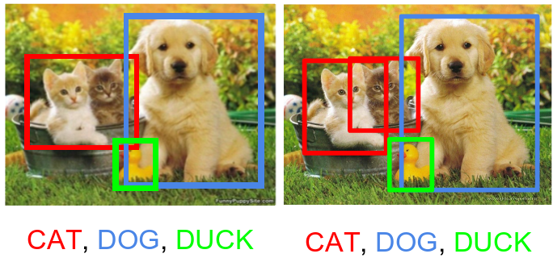Exemple du résultat de la segmentation (à gauche) et de la segmentation d’instance (à droite).Exemple du résultat de la segmentation (à gauche) et de la segmentation d’instance (à droite).
Le comptage d’objets: Compter le nombre d’instances d’un objet dans une image (par exemple: Le nombre de personnes). Il y a deux façons pour approcher ce problème: Dans la première, le programme de comptage \(C\) retourne un nombre entier représentant combien y a t’il d’objet dans l’image. Dans la deuxième approche qu’on utilisera dans ce document, le programme de comptage \(C\) génère une carte de densité (density map): Il s’agit d’une matrice de même taille que l’image mais contenant des nombres réels tel que l’intégrale (ou la somme des valeurs de pixels) sur toute région de la carte de densité donne le nombre d’objet dans cette région (Lempitsky and Zisserman 2010). La figure [crowd-counting] donne deux exemples d’images de foules avec les cartes de densité correspondantes.
Exemples d’images de foules avec les cartes de densité correspondantes. Figure 2 prise sans autorisation de (Zhang et al. 2016)
Human pose estimation: L’estimation de la posture des personnes figurants dans une image peut être réalisée en détectant la position de leurs visages, extrémités et articulations principales (genoux, épaules et couds) et en rattachant ensuite les points appartenant à chaque personne comme dans Cao et al. (2016). La sotie d’un estimateur de posture peut être vue comme un graphe non orienté où les nœuds sont les zones d’intérêt détectées (articulations, tête, etc.) et les arcs représentent les liaisons entres elles. La figure [lsp] donne un exemple de tels graphes pris du benchmark Leads Sports Pose.
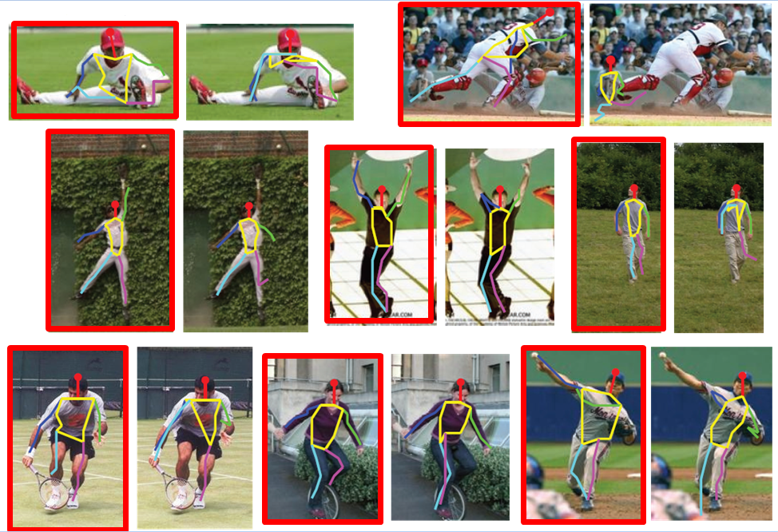Exemple d’estimation des postures pris du benchmark Leads Sports Pose
Le suivi (ou Tracking): Suivre le mouvement de cibles (des point appartenant à des objets) dans des images consécutives d’une vidéo. On cherche à trouver une suite de coordonnées représentant la position de chaque cible à travers la séquence d’images. Cette suite est appelée track. Ce problème est relié à la ré-identification des objets dans plusieurs images différentes.
Les benchmarks de la vision par ordinateur
Les benchmarks sont des tests dont le but est d’évaluer et comparer les performances des systèmes informatiques. Dans le domaine de la vision par ordinateur il y a plusieurs benchmarks qui viennent sous forme de bases de données publiques d’images et vidéos annotées. Les annotations dépend du problème visé par le benchmark. Par exemple, il s’agit des classes des images dans la classification, et des masques des objets figurant dans les images dans la segmentation. Le but des chercheurs travaillant dans ce domaine est de produire des programme capable de générer les bonnes annotations à partir des images avec le minimum possible d’erreurs.
La plupart d’algorithmes employés en vision par ordinateur sont basés sur l’apprentissage automatique (L’objet du chapitre suivant). C’est à dire que le programme de classification (ou de détection, de segmentation, etc.) est généré après entrainement sur une base de données d’exemples. L’entrainement peut être vu comme un calibrage des paramètres du programme de sorte à ce que sa sortie soit la plus similaire au annotations réelles. Comme c’est de la tricherie d’évaluer un programme sur la base de données de laquelle il a été généré, les benchmarks fournissent au moins deux bases de données: Une appelée base d’apprentissage (utilisée pour l’apprentissage) et l’autre appelée base de test (utilisée uniquement pour tester la performance des systèmes finaux).
Nous citons ici quelques benchmarks:
Benchmarks de classification:
MNIST[MNIST]: Images en niveau de gris de taille \(28\times 28\) pixels contenant de chiffres écrits à la main, avec 60000 images d’apprentissage et 10000 images de test (Deng 2012). MNIST est relativement facile à résoudre, il est présenté quand même ici parce qu’il représente un bon exercice d’apprentissage et un moyen de tester les méthodes et obtenir des résultat dans peu de temps.
CIFAR-10[CIFAR-10]: Images en couleur de taille \(32 \times 32\) pixels appartenant à 10 classes, avec 6000 images par classe. Il y a 50000 images d’entrainement et 10000 images de test. Les 10 classes sont: airplane, automobile, bird, cat, deer, dog, frog, horse, ship et truck (Krizhevsky and Hinton 2009).
CIFAR-100[CIFAR-100]: Images en couleur de taille \(32 \times 32\) pixels appartenant à 100 classes, avec 600 images par classe. Il y a 50000 images d’entrainement et 10000 images de test. Les 100 classes sont regroupées en les 20 superclasses: aquatic mammals, fish, flowers, food containers, fruit and vegetables, household electrical devices, household furniture, insects, large carnivores, large man-made outdoor things, large natural outdoor scenes, large omnivores and herbivores, medium-sized mammals, non-insect invertebrates, people (avec comme sous classes: baby, boy, girl, man, woman), reptiles, small mammals, trees, vehicles 1 (avec somme sous classes: bicycle, bus, motorcycle, pickup truck, train) et vehicles 2 (Krizhevsky and Hinton 2009).
STL-10[STL-10]: Images en couleur de taille \(96 \times 96\) pixels appartenant à 10 classes, avec 500 images d’entrainement et 800 images de test par classe. Les 10 classes sont: airplane, bird, car, cat, deer, dog, horse, monkey, ship, truck (Coates, Ng, and Lee 2011).
Benchmarks de détection et de suivi:
Caltech Pedestrian 10 heurs de vidéos de \(640 \times 480\) pixels et 30Hz, prises avec un véhicule circulant dans un environnement urbain. Ce qui fait envirent 250000 frames (chaque vidéo est de 137 minutes) avec un total de 350000 fenêtre de délimitage (bounding boxes) et 2300 piétons uniques annotés (Dollar, Wojek, and Schiele 2012).
INRIA Persons: 1805 images de taille \(64 \times 128\) pixels extraites de photos personnelles contenant des personnes (Dalal and Triggs 2005).
MOT Challenge: (Multiple Object tracking Challenge) benchmark pour le suivi des objets multiples dans le but de créer un cadre pour l’évaluation standardisée des méthodes de suivi des objets multiples (Milan et al. 2016).
Benchmarks d’estimation de posture:
Leeds Sports Pose Dataset: 2000 images annotées de sportifs rassemblées de Flickr et qui ont été mises à l’échelle de telle sorte que la personne la plus en vue soit d’environ 150 pixels de longueur. Chaque image a été annotée avec 14 emplacements communs. Les articulations gauche et droite sont étiquetées à partir d’un point de vue centré sur la personne (Johnson and Everingham 2010).
Benchmarks traitants plusieurs problèmes:
PASCAL Visual Object Classes (ou PASCAL VOC) consiste en deux composantes : (i) une base de données publique de 19,737 images annotées (en 2010) et un logiciel d’évaluation standard, et (ii) une compétition organisée annuellement depuis 2005. A partir de 2012, il y a 3 challenges principaux : classification, détection et segmentation avec 20 classes d’objets : Aeroplanes, Bicycles, Birds, Boats, Bottles, Buses, Cars, Cats, Chairs, Cows, Dining tables, Dogs, Horses, Motorbikes, People, Potted plants, Sheep, Sofas, Trains, TV/Monitors.
De plus il y a 2 challenges supplémentaires : détection d’actions (où les actions incluent jumping, phoning, riding a bike, etc.) et la détection des têtes, mains et pieds des personnes (Everingham, Eslami, and Gool 2015).
ILSVRC[ImageNet]: un benchmark de classification et de détection d’objets de millions d’images de 1000 catégories. Similairement à PASCAL VOC, ILSVRC consiste en : (i) une base de données publique de 14,197,122 images annotées (en Aout 2014) et (ii) une compétition annuelle depuis 2010 jusqu’à présent. ILSVRC contient 3 challenges : la classification (2010-2014), la localisation d’un objet seul (2011-2014) et la détection d’objets (2013-2014) (Russakovsky et al. 2015).
PETS: à partir de 2016, ce benchmark traite plusieurs défis de vision définis dans l’atelier PETS 2016 et correspondant à différentes étapes dans un système de compréhension vidéo: Analyse de vidéo à bas-niveau (détection et suivi d’objets), analyse de vidéo à moyen niveau (détection d’événement simple: La reconnaissance du comportement d’un acteur unique) et l’analyse de haut niveau (détection de l’événement complexe: le comportement et la reconnaissance de l’interaction de plusieurs acteurs) (Patino, Cane, and Vallee 2016).
Microsoft COCO (Common Objects in Context): La base de données COCO contient 2.5 million instances d’objets dans un total de 328,000 images labellisées et segmentées, et elle comprend 91 catégories d’objets reconnaissables par un enfant de 4 ans. En contraste avec ImageNet, COCO possède mois de catégories mais plus d’instances par catégorie pour permettre d’entrainer des algorithmes de localisation exacte. De plus, COCO contient plus d’instances d’objets par image (7.7 en moyenne) par rapport à PASCAL (2.3) et ImageNet (3.0) (Lin et al. 2014). COCO offre des annotations de segmentation d’instance (permettant ainsi la détection) et à partir de 2017, elle présente des annotations des postures humaines.
Nous remarquons dans les Leader Boards des benckmarks présentés ci-dessus et dans Rodrigo Benenson (2016)1 que la plupart des (voir toutes les) approches bien classées emploient des techniques comme les réseaux de neurones artificiels convolutifs profonds.
Conclusion
Nous avons présenté dans ce chapitre une formulation des images et des vidéos. Ensuite nous avons expliqué les problèmes de vision: la classification, la détection, la segmentation, le comptage d’objets, l’estimation de la pose et le suivi d’objets. Puis nous avons présenté quelques unes des bases de données les plus utilisées pour évaluer et comparer les méthodes. Nous entamons dans le chapitre suivant l’apprentissage automatique qui est au cœur des méthodes employées en la vision par ordinateur.
L’apprentissage automatique
Introduction
Dès les années 1970, les chercheurs ont rendait compte qu’il est très difficile d’explicitement programmer des logiciels capables de comprendre les images naturelles. Ils sont donc réorientés vers l’apprentissage automatique (Welch 2016).
Dans ce chapitre, nous définissons l’apprentissage automatique supervisé et non supervisé (section 2.1) et nous explorons plus en détail sa variante supervisée en décrivant deux types d’algorithmes: Les réseaux de neurones artificiels (section 2.2) et les arbres de décisions et de régression (section 2.3). Ensuite, nous abordons dans la section 2.4 quelques méthodes d’amélioration des performances des modèles d’apprentissage supervisé.
Définitions
L’apprentissage automatique est le sous-domaine de l’informatique qui permet à l’ordinateur d’apprendre à faire des prédictions à partir des données. Il y a plusieurs types d’apprentissage automatique. Nous nous limitons ici aux apprentissages supervisé et non supervisé.
L’apprentissage non supervisé
L’apprentissage non supervisé consiste à découvrir la structure cachée des données d’apprentissage (données non étiquetées \(D = \{x^{(i)}\}_{ x^{(i)} \in X }\) où chaque donnée est un vecteur d’attributs \(x^{(i)} = (x^{(i)}_1, ..., x^{(i)}_k)^T\)). Parmi les problèmes usuellement traités par l’apprentissage non supervisé, nous citons:
Le clustering: Le but du clustering est de partitionner les données en \(k\) classes de telle sorte que (1) les éléments du même cluster (partition) soient le plus similaires possible, (2) et ceux des clusters différents soient le moins similaires possible. Les algorithmes de clustering utilisent une fonction de distance pour quantifier la similitude.
K-Means fait partie des algorithmes de clustering les plus connus. Il fonctionne comme suit: À partir d’un clustering initial généré aléatoirement (ou par un autre algorithme), on calcule les centres de chaque cluster, puis on refait le clustering des données en mettant chaque donnée dans le cluster du centre le plus similaire. Le processus est répété jusqu’à la stabilisation des clusters (c’est à dire qu’ils ne changent pas d’une itération à l’autre) ou au dépassement d’un nombre d’itérations maximal (Neyman 1967).
La réduction de dimensionnalité: La réduction de dimensionnalité permet d’amoindrir le nombre d’attributs des données. Elle est souvent employée avant une autre technique d’apprentissage et peut avoir comme objectif de simplifier le problème à étudier, diminuer le temps de calcul, permettre de visualiser les données ou supprimer les corrélations entre les différentes caractéristiques des données.
Il y a une multitude d’algorithmes de réduction de dimensionnalité, nous citons par exemple l’analyse en composantes principales (ACP) qui consiste à transformer les attributs liés entre eux (ou corrélés) en nouveaux attributs décorrélés les uns des autres. Ces nouveaux attributs (appelés composantes principales) sont construits par des combinaisons linéaires des anciens attributs. L’ACP permet au praticien de réduire le nombre d’attributs en ne considérant que les composantes principales où les données détiennent une variance importante (Pearson 1901).
L’apprentissage supervisé
L’apprentissage supervisé est la tâche d’inférer une fonction à partir d’une base de données d’entraînement labellisées. Formellement, un algorithme d’apprentissage supervisé prend en entrée une base de données d’apprentissage (un ensemble d’exemples \(S = \{(x^{(1)}, y^{(1)}), (x^{(2)}, y^{(2)}), ..., (x^{(m)}, y^{(m)})\}\)), où les \(x^{(i)} \in X\) sont des objets d’entrée (généralement: des vecteurs dans un espace multidimensionnel) et à chacun d’eux correspond une valeur de sortie \(y^{(i)} \in Y\) (\(y^{(i)}\) est le label de \(x^{(i)}\)).
On suppose que les exemples d’apprentissages (l’ensemble \(S\)) ont été échantillonnés d’une distribution \(D\) de couples \((X, Y)\). La loi que suit la distribution \(D\) n’est pas connue et on n’a accès qu’à l’échantillon \(S\). L’objectif de l’algorithme d’apprentissage est d’inférer la loi de la distribution \(D\), en construisant une fonction \(h\) (appelée modèle) qui génère pour toute entrée \(x^{(j)}\) (pas nécessairement présente dans \(S\)) une valeur \(h(x^{(j)})\) similaire à \(y^{(j)}\). Il s’agit alors d’un problème d’optimisation qui stipule à la recherche d’une fonction \(h^\star\) minimisant une fonction objectif (loss function): \(L(h(x^{(j)}), y^{(j)})\) pour tout \((x^{(j)}, y^{(j)}) \in D\) (pas seulement \(\in S\)).
Pour résoudre ce problème, on cherche la fonction \(h^\star\) faisant aussi peu de fautes que possible lors de la prédiction des sorties disponibles dans \(S\), mais qui se généralise au-delà de cet ensemble d’apprentissage.
Lorsque le domaine de sortie \(Y\) est discret énumérable, on dit que c’est un problème de classification, et lorsqu’il est continu, on parle de problème de régression.
Exemples
L’exemple type de classification est celui de la détection des messages non désirables: les \(X\) représentent des messages email et \(Y = \{Spam, Non~Spam\}\). à partir d’une base de données d’exemples de messages spam et non spam, il est possible d’inférer une fonction qui prédit avec bonne précision si un nouveau message est spam ou pas.
Pour la régression, prenons l’exemple du problème de prédiction des prix des maisons. \(X\) contient les caractéristiques de la maison comme sa taille, le nombre de chambre et son adresse, et \(Y\) donne son prix. Étant donné une base de données d’exemples de maisons avec leurs prix, on peut inférer les prix d’autres maisons en voyant uniquement leurs caractéristiques.
Mesure de qualité des modèles entrainés
Le but de l’entrainement est de construire (ou calibrer) un modèle qui (1) minimise l’erreur de prédictions dans les données d’entrainement et (2) qui fait de bonnes prédictions avec d’autres exemples (généralisation). Si on produit un modèle très simple, il se peut qu’il ne soit pas capable d’expliquer les données d’apprentissage, et si on le produit très compliqué, il risque d’être très spécialisé à la base d’apprentissage (problème de sur-apprentissage ou overfitting). On cherche alors un compromit entre ces deux extrêmes.
Usuellement en apprentissage automatique, une petite partie des données labellisées (par exemple 10%) n’est pas utilisée pour l’apprentissage. Après la fin de l’entrainement du modèle, il est évalué sur les données retenues pour voir s’il se généralise. Ces données sont appelées: données de test.
Cette technique est employée aussi pour savoir quelle degrés de complexité est nécessaire pour un problème d’apprentissage particulier. Une autre partie des données labellisées est mise de coté durant l’apprentissage, et est utilisée pour évaluer plusieurs modèles et sélectionner celui qui se généralise le mieux. Ces données s’appellent: les données de validation.
Pour plus de détails sur la mesure de la qualité des modèle, nous vous référons à (Abu-Mostafa, Magdon-Ismail, and Lin 2012).
Algorithmes
Parmi les algorithmes d’apprentissage supervisé, nous citons:
les réseaux de neurones artificiels (section 2.2), dont la régression linière et les SVM (Support vector machines) font un cas particuliers, et
les arbres de classification et de régression (section 2.3).
Les réseaux de neurones artificiels
Les réseaux de neurones artificiels (ou ANN pour Artificial Neural Networks) est un modèle d’apprentissage automatique qui prend son nom du parallèle entre lui et le système cérébral des animaux. Les réseaux de neurones sont un ensemble de nœuds (neurones artificiels) reliés entre eux et avec le reste du système avec des liaisons par le billet desquelles ils communiquent de l’information. Ces neurones artificiels et leurs liaisons ressemblent aux cellules nerveuses qui sont l’unité fonctionnelle de base du cerveau animal où chaque cellule reçoit les signaux électriques des cellules voisines sur ses Dendrites et envoient à son tour des signaux électriques avec son Axone comme représenté dans la figure [neurones].
Les réseaux de neurones artificiels sont rangés comme un ensemble multicouche de neurones artificiels. Chaque neurone possède une valeur numérique qu’il calcule en fonction des valeurs des neurones de la couche précédente pondérées par les poids des liaisons (car chaque liaison entre deux neurone possède son propre poids). Les neurones de la première couche sont un cas particulier car leurs valeurs sont déterminées par l’entrée du réseau et la dernière couche représente la sortie du réseau. Tout cela est montré dans la figure [reseau-de-neurones].
Schéma d’un réseau de neurones artificiels
Tout réseau de neurones artificiels calcule une fonction définie par:
son architecture: Le nombre de couches, le nombre de neurones par couche et la façon avec laquelle les neurones sont reliées,
les poids de chaque liaison et
la fonction calculée par chaque neurone.
La fonction calculée par le réseau admet en entrée un vecteur d’entrée \(x \in X\) et génère en sortie une valeur \(y \in Y\). Le vecteur d’entrée est copié par l’utilisateur sur la couche d’entrée du réseau et la valeur de sortie est récupéré de la dernière couches du réseau après la propagation des valeurs de tous les neurones.
Le but de l’apprentissage avec les réseaux de neurones artificiels est de déterminer le réseau (la fonction) le plus adéquat pour le problème d’apprentissage en question. C’est à dire déterminer son architecture, les poids des liaisons et les fonctions calculées par les neurones. Bien qu’il existe des chercheurs travaillant sur cette forme générale d’apprentissage (Floreano, Dürr, and Mattiussi 2008), nous nous limitons dans ce rapport à la simplification adoptée par la plupart des chercheurs où l’architecture et les fonctions des neurones individuels sont fixée. Dans ce réglage, l’apprentissage se limite à la recherche les poids de liaisons optimaux.
Apprentissage des fonctions linéaires
Commençons dans notre analyse des réseaux de neurones par ceux calculant des fonctions linéaires. Un réseau de neurones où les neurones calculent la somme pondérée de leurs entrées représente par définition une fonction linéaire quelque soit son architecture2. Donc, il est inutile d’avoir plus de deux couches: Une couche d’entrée reliée directement à une couche de sortie. Le problème de recherche de la fonction de régression ou de classification des données est donc réduit au calibrage des poids de liaison entre les entrées et la ou les sorties.
Classification avec une fonction linéaire
Commençons par le cas de classification à deux classes (représentées par \(1\) et \(-1\)) et supposant que les entrées à classifier (qui sont vue comme des points dans un espace multidimensionnel) peuvent être séparées par un hyperplan (définie par une fonction linéaire) de sorte que la plupart des points de chaque coté de l’hyperplan appartiennent à la même classe (figure [lineairement-separables]).
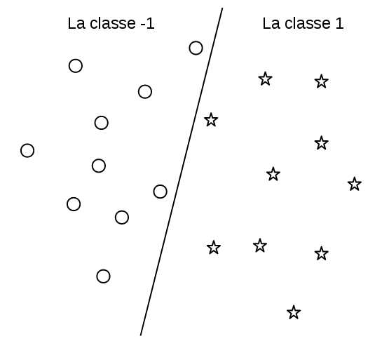Exemple de deux classes linéairement séparables
Le modèle de classification est donné par: \[\text{Classe de x} = C_W(x) =
\begin{cases}
+1 & \text{si } w_0 \times x_0 + w_1 \times x_1 + ... + w_n \times x_n + w_{n+1} > 0\\
-1 & \text{sinon}
\end{cases}\]
où \(x = (x_0, x_1, ..., x_n)^T\) est le vecteur d’entrée, \(W = (w_0, w_1, ..., w_{n+1})^T\) est le vecteur des paramètres du réseau et \(C_W(x)\) est la fonction calculée par le réseau.
L’entrainement de ce modèle revient à trouver les paramètres \(w_i\) minimisant l’erreur de classification. Une approche simple pour résoudre ce problème est d’utiliser un algorithme de recherche pour trouver les \(w_i\) minimisant la fonction objective: \[\sum\limits_{(x^{(i)}, y^{(i)}) \in S} (1 - signe( y^{(i)} \times C_W(x^{(i)}) ))/2\]
où \(S\) est l’ensemble d’apprentissage, la fonction \(signe\) retourne \(+1\) si son argument est positif et \(-1\) sinon, et \(y^{(i)} \in \{-1, 1\}\). L’intuition derrière cette formule est que \((1 - signe( y^{(i)} \times C_W(x^{(i)}) ))/2\) est égale à \(+1\) quand l’exemple \(x_i\) est mal-classifié et 0 sinon.
Il y’a d’autres méthodes d’entrainement plus efficaces que la recherche aveugle, citons par exemple SVM qui détermine les paramètres \(w_i\) de sorte à maximiser la marge d’erreur et qui a plusieurs propriétés théoriques intéressantes (Cortes and Vapnik 1995). D’habitude, SVM n’est pas traitée comme un cas particulier des réseaux de neurones comme ici. Nous n’allons pas nous étaler sur cette méthode et nous passerons à un alternatif plus généralisable: Gradient descent (ou l’algorithme du gradient).
Gradient descent est un algorithme d’optimisation pour les fonctions objectifs dérivables. Il utilise l’information donnée par la dérivé de la fonction objectif pour converger rapidement vers un minimum local. Il y a des variantes améliorées de cet algorithme comme Momentum(Rumelhart, Hinton, and Williams 1986) et Adam(Kingma and Ba 2014) mais nous expliquant ici uniquement sa version simple donnée dans la figure [GD]:
Initialiser aléatoirement le vecteur des poids \(W = (w_0, ..., w_{n+1})^T\);
Calculer le gradient de la fonction objectif \(f\) au point courent \(W\): Càd. la dérivé partielle de \(f\) par rapport à chaque composante \(w_i\): \[\frac{\partial f}{\partial w_0}(W), \frac{\partial f}{\partial w_1}(W), ..., \frac{\partial f}{\partial w_{n+1}}(W)\]
Mettre à jour le point \(W\) dans la direction inverse du gradient. Pour tout \(i \in [0, n+1]\), faire: \[w_i \gets (1 - \alpha) \times w_i + \alpha \times \frac{\partial f}{\partial w_i}(W)\] (\(\alpha \in [0, 1]\) est appelé le taux d’apprentissage ou learning rate).
Répéter les étapes (2) et (3) jusqu’à la convergence.
Lorsque la base de données d’apprentissage est de très grande taille qu’il est couteux de calculer le gradient de la fonction objectif incluant toute la base, on échantillonne dans chaque itération de l’algorithme du gradient un sous ensemble à considérer dans le calcule de la fonction objectif. Cette variante est appelée: Stochastic gradient descent (SGD).
Retournons maintenant à notre problème de classification et reformulons la fonction objectif comme une fonction dérivable. Nous utiliserons la formulation appelée régression linéaire qui est basée sur la fonction sigmoïde suivante: \[S(x) : \mathbb{R} \to [0, 1]\]\[S(x) = \frac{1}{1 + e^{-x}}\]\(S\) est (bijective) et a comme propriétés: \(S(0) = 0.5, \lim\limits_{x \to +\infty} S(x) = 1\) et \(\lim\limits_{x \to -\infty} S(x) = 0\).
On peut interpréter la fonction \(S\) appliquée à la sortie de notre réseau comme la probabilité d’appartenance de l’entrée \(x\) à la classe 1: Plus la sortie est positive, plus on est sûr que l’entrée appartient à la classe 1. Plus la sortie est négative, plus on est sur que l’entrée n’appartient pas à la classe 1 (elle appartient donc à la classe -1) et si la sortie est nulle la probabilité est de \(0.5\).
Notre nouvelle fonction objectif dérivable (et donc optimisable par l’algorithme du gradient) est donnée par: \[\sum\limits_{(x^{(i)}, y^{(i)}) \in S} (1 - (2 \times S(C_W(x^{(i)})) - 1) \times y^{(i)})/2\]
où \((2 \times S(C_W(x^{(i)})) - 1) \times y^{(i)}\) est en sorte la version dérivable de \(signe(C_W(x^{(i)}) \times y^{(i)})\) de la fonction objectif précédente.
Régression avec une fonction linéaire
Supposant qu’on a un problème de régression où les sorties sont raisonnablement prédites par des fonctions linéaires des entrées (comme dans la figure [regression-lineaire]).
Exemple où la relation entrée-sortie est quasi-linéaire
Le modèle de régression est donnée par: \[y = f_W(x) = w_0 \times x_0 + w_1 \times x_1 + ... + w_n \times x_n + w_{n+1}\] où \(x = (x_0, x_1, ..., x_n)^T\) est le vecteur d’entrée.
La méthode de moindres carrés permet de trouver les paramètres \(w_i\) décrivant mieux les données. Il s’agit de minimiser la fonction objectif dérivable suivante en utilisant l’algorithme du gradient de la figure [GD]:
Extension des fonctions linéaires avec l’astuce du noyau
Les modèles linéaires sont très limités: Un classifieur linéaire ne peut pas séparer deux classes non-linéairement séparables (comme dans la figure [kernel1]) et dans les problèmes de régression, la relation entrée-sortie à apprendre peut ne pas être linéaire. Il reste comme même possible d’utiliser les modèles linéaires (de deux couches) de la section précédente en les opérant non pas sur les données brutes, mais plutôt sur une version transformée des données. L’idée est de projeter les vecteurs d’entrée dans un espace plus adapté à la classification/regréssion linéaire. Nous présentons ici l’astuse du noyau qui permet de faire ça.
L’astuce du noyau (en anglais Kernel trick) est basée sur la transformation de l’espace de représentation des données d’entrées en un espace de plus grande dimensionnalité, où un classifieur linéaire peut être utilisé et donne de bonnes performances. Cette transformation est réalisée en concaténant au vecteur d’entrées des combinaisons non linéaires de ses composantes.
Prenons l’exemple artificiel3 de la figure [kernel1] où les données d’entrées sont des vecteurs à 2 dimensions et on a 2 classes représentées par des cercles et des étoiles. Comme les étoiles se trouvent au milieu des cercles, un hyperplan bidimensionnel (une ligne droite) n’est pas capable de les séparer. Mais si on projette ces données sur 3 dimensions en concaténant aux vecteurs d’entrées \(\{ x = (x_0, x_1) \}\) la composante \(x_0 \times x_1\), obtenant ainsi l’ensembles \(\{ x' = (x_0, x_1, x_0 \times x_1) \}\) présenté dans la figure [kernel2], on remarque qu’il y a un plan (hyperplan en 3 dimensions) séparant les deux classes.
Un désavantage de cette extension des modèles linéaires est que les noyaux sont à modéliser explicitement et ne sont pas appris automatiquement.
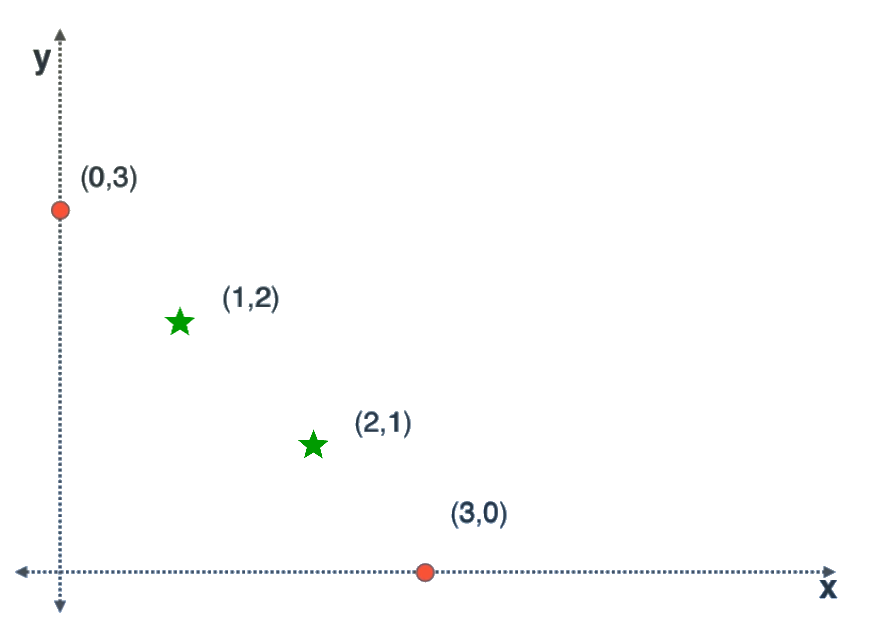Exemple de 4 points à classifier.
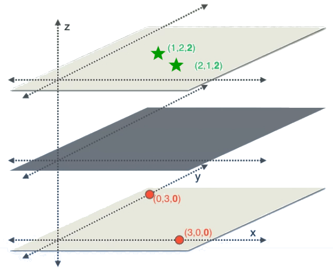Les même 4 points précédents projetés en 3D. Maintenant les deux classes sont séparables par un plan.
Apprentissage des fonctions non linéaires
Les réseaux de neurones artificiels sont un modèle très puissant quand ça vient à l’apprentissage des fonctions non linéaires. Csáji (2001) ont démontré que si un réseau de neurones contient 3 couches (la couche d’entrée, une couche intermédiaire dite couche cachée et la couche de sortie) tel que la couche intermédiaire contient un nombre suffisant de neurones calculant certaines fonctions non linéaires simples de leurs entrées, alors ce réseau est capable d’approximer n’importe quelle fonction continue.
Cependant, on utilise généralement des réseaux de neurones de plus de 3 couches car d’autres résultats (Liang and Srikant 2016) ont démontré que les réseaux de neurones à plusieurs couches sont capable d’apprendre beaucoup de fonctions avec un nombre de paramètres (poids à apprendre) réduit par rapport aux réseaux à 3 couches. Cette réduction de paramètres est essentielle car le nombre de données nécessaires pour d’entrainement est une fonction croissante du nombre de paramètres à apprendre (Abu-Mostafa, Magdon-Ismail, and Lin 2012).4
Les fonctions d’activations
Les fonctions calculées par les neurones sont généralement une somme pondérée des entrées suivie par une fonction d’activation dérivable et non linéaire. Voir la figure [activation-function].
Schéma d’un neurone avec fonction d’activation non linéaire, pris sans autorisation de (Fei-Fei, Karpathy, and Johnson 2016)
Parmi les fonctions d’activations utilisées nous citons:
Les fonctions sigmoïdes comme:
La fonction logistique \(f(x) = \frac{1}{1 + e^{-x}}\)
RELU (rectified linear unite) \(f(x) = \begin{cases}
x & \text{si } x \geq 0\\
0 & \text{sinon}
\end{cases}\)
Leaky RELU: \(f(x) = \begin{cases}
x & \text{si } x \geq 0\\
\alpha \times x & \text{sinon}
\end{cases}\) avec \(0 < \alpha < 0.1\)
Des approximations des fonctions linéaires rectifiées comme ELU (Exponential liear units): \(f(x) = \begin{cases}
x & \text{si } x \geq 0\\
a \times (e^x - 1) & \text{sinon}
\end{cases}\) et \(a \geq 0\).
Transformations topologiques et apprentissage de représentation
Chaque couche du réseau de neurones artificiel transforme ses entrées avec des fonctions non linéaires générant l’entrée de la couche suivante. Ceci est similaire au concept des noyaux où on calcule auparavant des combinaisons non linéaires des entrées pour aider un classifieur linéaire. La différence ici est que les fonctions non linéaires sont apprises automatiquement par le réseau. Chaque couche apprend une transformation de ces entrées pour aider la couche suivante à résoudre le problème. On appelle ce phénomène l’apprentissage de la représentation.
Apprentissage des réseaux de neurones multicouches
Nous supposant toujours la simplification stipulant que l’architecture du réseau et les fonctions d’activations utilisées sont fixés et dérivables. L’apprentissage revient à chercher les poids de liaisons minimisant une fonctions objectif formulée selon le problème à résoudre (classification, régression, etc.). L’algorithme d’optimisation le plus utilisé pour les réseaux multicouches est la rétro-propagation (Back propagation): C’est une variante de l’algorithme du gradient qui calcule le gradient de la fonction objectif en commençant par les dérivés partielles par rapport aux paramètres de la dernière couche, et en reculant couche par couche jusqu’à la première. Ce calcule utilise le théorème de dérivation des fonctions composées (chain rule). La version stochastique de cet algorithme est donnée dans la figure [Backpropagation].
Initialiser les poids du réseau aléatoirement;
Mettre à l’entrée du réseau un échantillon de la base d’entrainement;
Faire une propagations vers l’avant des valeurs de neurones;
Calculer le gradient par rapport à chaque paramètre du réseau en commençant par ceux de la dernière couche et en finissant par ceux de la première;
Mettre à jour les paramètres du réseaux en avançant leurs valeurs dans le sens inverse du vecteur gradient;
Répéter les étapes (2), (3), (4) et (5) jusqu’à la convergence des paramètres.
Problèmes des réseaux de neurones artificiels
Les réseaux de neurones de grande taille peuvent apprendre des fonctions non linéaires complexes et très spécialisées à la base d’apprentissage (problème de sur-apprentissage). Ce problème peut être résolut de plusieurs manière comme:
Réduire la taille de réseau,
Early stopping: Arrêter tôt l’algorithme d’apprentissage,
Ajouter un facteur de régularisation à la fonction objectif,
Dropout: Désactiver les neurones de façon aléatoire durant l’apprentissage (Srivastava, Hinton, and Krizhevsky 2014).
Aussi, l’algorithme de rétro-propagation est sensible à l’initialisation et aux problèmes des gradients qui peuvent exploser ou disparaitre (explosing and vanishing gradients). Ioffe and Szegedy (2015) ont conçu la technique de batch normalisation pour régler ces problèmes. Nous vous référons au cours de Fei-Fei, Karpathy, and Johnson (2016) qui adresse plus en détails les problèmes pratiques d’entrainement des réseaux de neurones.
En plus de tout ça, les réseaux de neurones sont considérés comme des boites noires: Ils sont capables de trouver une solution aux problèmes d’apprentissage mais on ne comprend pas vraiment ses solutions. C’est un peu similaire à avoir un expert humain qui prend de bonnes décisions en suivant son intuition, mais il lui même ne comprend pas ce qui se passe dans sa tête. Nous retournons à ce problème d’interprétabilité dans le chapitre suivant.
Les arbres de décision
Les arbres de décision sont un modèle d’apprentissage supervisé basé sur la division successive de l’espace des entrées (Les \(x \in X\)). À chaque étape, cet espace est devisé en 2 sous-espaces: (1) là où une fonction booléenne sur une variable d’entrée s’évalue à vrai et (2) là où elle s’évalue à faux. Le choix de la fonction de division est fait intelligemment et le processus est répété jusqu’à obtenir des sous-espaces où le problème d’apprentissage est facile à résoudre. Ces modèles peuvent être représentés graphiquement par un arbre (comme dans la figure [tree]) d’où leur nom.
Les arbres de décision sont généralement construits par un algorithme d’entrainement glouton. L’arbre est créé à partir de la racine (qui représente l’espace global des entrées) et à chaque étape est choisie la fonction de division qui maximise une métrique de gain immédiat. Cet algorithme trouve des optimaux locaux mais il s’avère que ce n’est pas un problème car l’arbre avec performance optimale dans la base d’entrainement n’est pas forcement généralisable (Welch 2016).
Il y a deux variantes principales des arbres de décisions: Les arbres de régression et les arbres de classifications:
Dans les arbres de régression, le choix des fonctions de division est fait de sorte à minimiser la variance des sorties (les \(y\)) à l’intérieur de chaque sous espace.
Pour les arbres de décision, la fonction de division choisie à chaque étape est celle maximisant le gain en homogénéité (toujours des sorties \(y\)) à l’intérieur de chaque sous espace. L’homogénéité est mesurée en utilisant l’index de Gini ou l’entropie de Shannon (Welch 2016).
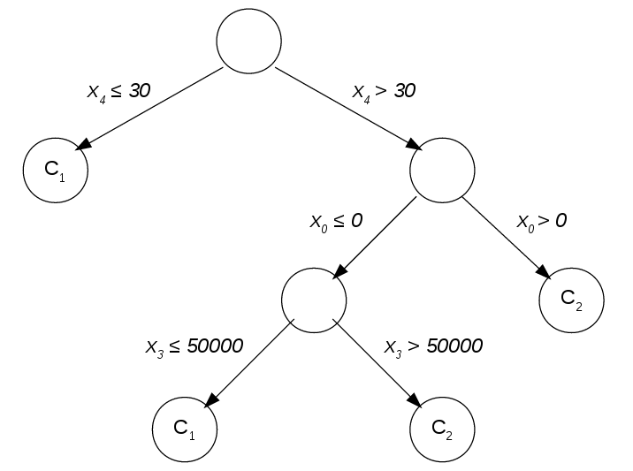Un exemple d’un arbre de classification.
La figure [tree] donne un exemple d’un arbre de décision pour un problème de classification où les entrées sont des vecteurs dans \(\mathbb{R}^5\) (\(x = (x_0, x_1, x_2, x_3, x_4)^T\)) et les classes sont \(\{C_1, C_2\}\). Nous soulignons les points suivants:
Les fonctions de division n’opère que sur une seule variable d’entrée. Dans le nœud racine par exemple, on divise l’espace des entrées en utilisant la fonction: \[f(x) = \begin{cases}
\text{vrai} & \text{si } x_4 > 30 \\
\text{faux} & \text{sinon}
\end{cases}\]
Cette restriction d’une seule variable d’entrée limite l’espace de recherche des fonctions de division accélérant ainsi la procédure d’apprentissage. Elle favorise aussi les modèles simples et donc généralisable.
L’arbre n’est ni grand ou complet ni équilibré. Généralement, on limite la taille de l’arbre même si cela détériore la performance dans la base d’apprentissage. En fait, sans cette limite, le modèle appris divisera l’espace des entrées jusqu’à avoir une classification parfaite des exemples d’apprentissage. Un tel modèle peut être très complexe et donc ne pas pouvoir se généraliser aux nouvelles données. La taille optimale de l’arbre de décision dépend du problème. Elle est trouvée empiriquement comme expliqué dans la section 2.1.2.2.
L’arbre de décision est facile à comprendre. Il s’agit d’une boite blanche.
Transformations topologiques
Les arbres de décision comme expliquée ci-dessus se basent uniquement sur la division de l’espace d’entrées. Il y a d’autres généralisations qui permet chercher des transformations de l’espace d’entrées qui facilitent la tache d’apprentissage de manière similaire aux réseaux de neurones. Nous citons par exemple:
Les arbres de décision obliques: On enlève dans cette variante la restriction des fonctions de division à une seule variable d’entrée (Heath, Kasif, and Salzberg 1993). Cette méthode possède comme inconvénients: (1) l’augmentation de l’espace de recherche des fonctions de division prolongent considérablement la phase d’apprentissage, et (2) le fait que les fonctions de divisions ne partagent pas le calcul.
Entropy Nets et Neural decision trees: Dans cette approche, l’arbre de décision est modélisée comme un réseau de neurones artificiel multicouche ce qui permet l’apprentissage des transformations topologiques. Le réseau est entrainé avec l’algorithme de rétro-propagation (Sethi 1990; Balestriero 2017).
Agrégation des modèles prédictifs
Il est possible d’obtenir un modèle prédictif (d’apprentissage supervisé) de très haute précision en combinant plusieurs modèles médiocres qui votent pour donner la réponse du nouveau modèle. Parmi ces méthodes d’agrégation de prédicteurs, citons:
Bootstrap aggregating (ou Bagging) (Breiman 1996): \(N\) bases de données sont échantillonnées de la base d’entrainement et sur chacune d’elle est entrainé un modèle. Le Baggin permet de minimiser la variance du prédicteur et de réduire le sur-apprentissage.
Random Forests est une extension du Bagging spécialisée pour les arbres de décision. En plus de l’échantillonnage de la base d’apprentissage, et à chaque nœud des arbres, seulement un sous ensemble échantillonné des variables d’entrées est considéré dans le choix de la fonction de division (Ho 1995)
Le Staking(Wolpert 1992): Plusieurs modèles prédictifs sont entrainés. Ensuite, un nouveau modèle est entrainé en utilisant les prédictions des anciens modèles comme variables d’entrées additionnelles.
Le Boosting: Nous citons ici sa variante AdaBoost (Adaptive Boosting) par Reund and Schapire (1996) où un ensemble de modèles est construit élément par élément. Chaque nouveau modèle est entrainé avec une fonction objectif qui met plus de poids sur les exemples mal prédits par l’ensemble de modèles courant. La prédiction de l’ensemble est calculée par une somme pondérée des prédictions de tous les modèles.
Conclusion
L’apprentissage automatique supervisé permet au ordinateurs de faire des prédictions sur les données après avoir vu des exemples d’entrainement. Nous avons présenté deux modèles d’apprentissage: Les réseaux de neurones artificiels et les arbres de décision (Le premier étant boite noire et le deuxième boite blanche). Il est possible d’obtenir des bonnes performances dans la tache d’apprentissage en combinant plusieurs modèles avec des techniques comme le Bagging, le Staking et le Boosting.
L’apprentissage automatique appliqué aux problèmes de vision par ordinateur
Introduction
La plupart des méthodes utilisées dans le domaine de vision par ordinateur se basent sur l’apprentissage automatique comme on verra dans ce chapitre.
La section 3.1 discute des approches classiques où les images sont pré-traitées pour faciliter l’apprentissage. Ensuite, la section 3.2 introduit les réseaux de neurones artificiels convolutifs qui sont devenus récemment l’état de l’art dans les benchmarks. Ils sont expliqués dans le contexte de classification et puis dans les problèmes de comptage des foules, la détection et l’estimation de posture. Enfin, la section 3.3 adresse quelques problèmes des méthodes modernes et présente quelques solutions.
Approches classiques
La représentation des images comme des matrices de valeurs d’intensité des pixels n’est pas très adéquate pour l’apprentissage automatique. Il est difficile de trouver des règles simples liant ces informations de bas niveau avec le concept haut niveau à apprendre (La classe de l’objet figurant dans l’image par exemple).
Les chercheur de vision automatique ont adapté la représentation connue sous le nom de bag of words et qui est utilisée dans le domaine du traitement des données textuels. La représentation des documents comme un vecteur des codes ASCII de leurs caractères individuels ne capture pas leur sémantique. Elle est donc inappropriée comme entrée aux algorithmes d’apprentissage classiques. D’où le développement de la représentation bag of words (Sac de mots) qui est construite comme suit: On considère un ensemble fixe de mots appellé dictionnaire. Les documents sont représentés par les histogrammes des occurrences des mots du dictionnaire les composants. Par exemple (pris de wikipedia), avec comme dictionnaire: \[["John","likes","to","watch","movies","Mary","too","also","football","games"]\] la phrase "John likes to watch movies. Mary likes movies too." est représentée par l’histogramme (ou vecteur) \((1, 2, 1, 1, 2, 1, 1, 0, 0, 0)^T\) et la phrase "John also likes to watch football games." par \((1, 1, 1, 1, 0, 0, 0, 1, 1, 1)^T\).
Plusieurs chercheurs ont traité les images de façon similaire aux textes: Un dictionnaire de caractéristiques locales (local features) est définie. Et chaque image est représentée par l’histogramme des caractéristiques y occurrent après leur détection par un extracteur de caractéristiques (feature extractor). De sorte, les images sont vues comme des documents et les caractéristiques représentent ses mots. Comme exemples de caractéristiques, citons les descripteurs SIFT(Lowe 1999) (la figure [SIFT]) et HOG (Histogram of Oriented Gradients) (Dalal and Triggs 2005) (la figure [HOG]). Elle sont extraites et passées comme entrées à l’algorithme d’apprentissage (au lieu des images brutes).
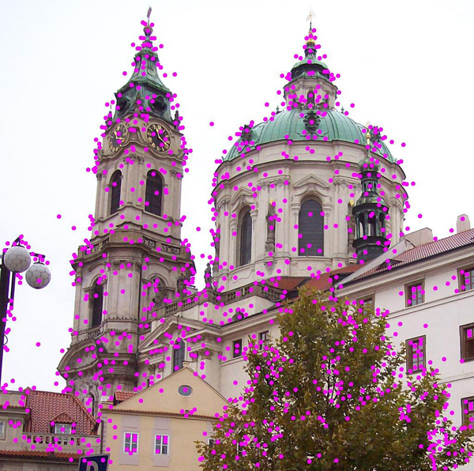Chaque descripteur SIFT possède un position, une orientation et une échelle. Les positions des descripteurs SIFT extraits de l’image sont représentés par des points. (https://commons.wikimedia.org/wiki/File:Sift_keypoints_filtering.jpg)
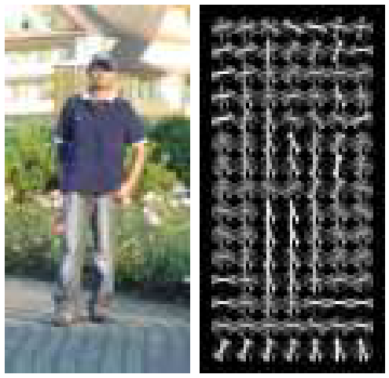Exemple des caractéristiques HOG extraites d’une image (Extrait sans autorisation de la figure 6 de (Dalal and Triggs 2005)).Les caractéristiques Haar sélectionné par l’algorithme (Viola and Jones 2001) pour la détection de visages. (Figure 3 de leur papier prise sans autorisation).
La caractéristique Haar est une fonction calculée comme suit: La somme des intensités des pixels à l’intérieure de la région blanche est soustraite de la somme des intensités des pixels de la région noire.
(Viola and Jones 2001) ont proposé une représentation des images appelée: L’image intégrale (Integral image). Dans cette représentation, les caractéristiques pseudo-Haar (Haar-like) peuvent être calculées très rapidement. Leur détecteur de visage est entrainé comme suit: Les images d’entrainement sont transformée en images intégrales. Ces dernières sont passées comme entrées à un arbre de décision qui utilise les caractéristiques pseudo-Haar comme fonctions de division. C’est à dire qu’il cherche les caractéristiques pseudo-Haar permettant de séparer autant que possible les images de visage des autres images. Une variante modifiée de l’algorithme Adaboost est utilisée pour entrainer un deuxième, troisième (et ainsi de suite) détecteurs des faux-positives. Les caractéristiques apprises par leur système sont faciles à interpréter (figure [Haar]) et efficaces à calculer.
Les réseaux de neurones convolutifs
Depuis 2012, les réseaux de neurones convolutifs ont commencé à être un composant essentiel des nouvelles méthodes de vision par ordinateur. Ces réseaux sont capables d’apprendre des caractéristiques utiles pour le problème d’apprentissage tout en opérant directement sur les images brutes. Ceci permet de se passer de la programmation manuelle des extracteurs de caractéristiques.
La représentation typique des images comme trois matrices \(R\), \(G\) et \(B\) peut être vue comme les sorties de trois détecteurs d’intensité des couleurs rouge, vert et bleu. Les problèmes de vision par ordinateur demandent par contre des détecteur de plus haut niveau.
Prenons l’exemple de la détection de visages. Un détecteur de visages est facile à concevoir si on se base sur des détecteurs des parties de visage: le nez, la bouche, les yeux, etc. De même, un détecteur des yeux peut être facilement construit en se basant sur des détecteurs de l’iris et des cils. Et en générale, les détecteurs de haut niveau peuvent être construits en prenant comme entrées les sorties des détecteurs de niveau un peu plus bas. Les réseaux de neurones convolutifs fonctionnent de cette façon: Ils apprennent une hiérarchie de détecteurs, de niveaux de plus en plus hauts, telle que la sortie de chaque niveau et l’entrée du suivant.
Les couches des réseaux de neurones convolutifs
Les réseaux de neurones convolutifs sont généralement construits à partir des couches suivantes:
La couche convolutive représente \(N\) détecteurs. Elle accepte en entrée les \(c\) canaux (matrices) de sortie de la couche précédente (par exemple: les matrices \(R\), \(G\) et \(B\) de la première couche) et génère en sortie \(N\) canaux, un canal par détecteur. Les canaux de sorties de la couche convolutive sont générés par application de \(N\) filtres convolutifs aux canaux d’entrée, comme montré dans la figure [conv-layer].
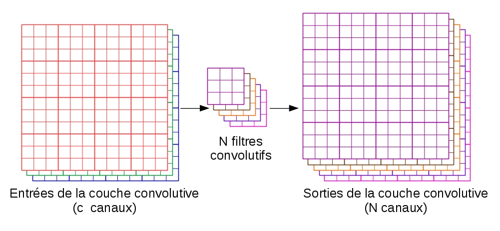Les entrées et les sorties d’une couche convolutive d’un réseau de neurone convolutif
Chaque filtre convolutif prend en entrée un nombre de matrices \(M^{(1)}\), ..., \(M^{(c)}\) (les canaux de la couche précédente) et génère en sortie une matrice \(M^{sortie}\) tel que: \[M^{sortie}_{i,j} = f(M^{(1)}_{l,m}, ..., M^{(c)}_{l,m}) |_{ i - k \leq l \leq i + k \text{, } j - k \leq m \leq j + k }\]\(f\) est une fonction linéaire de ses entrées, et \(k\) est un paramètre contrôlant la taille du filtre convolutif. Si par exemple \(k = 1\) et \(c = 3\) on obtient un filtre convolutif de taille \(3 \times 3\) (car \(2 \times k + 1 = 3\)) tel que: \(M^{sortie}_{i,j} = a_{0} +\) \(a_{1} \times M^{(1)}_{i-1, j-1} + a_{2} \times M^{(1)}_{i, j-1}
+ a_{3} \times M^{(1)}_{i+1, j-1} + ... + a_{9} \times M^{(1)}_{i+1, j+1} +\) \(a_{10} \times M^{(2)}_{i-1, j-1} + a_{11} \times M^{(2)}_{i, j-1}
+ a_{12} \times M^{(2)}_{i+1, j-1} + ... + a_{18} \times M^{(2)}_{i+1, j+1} +\) \(a_{19} \times M^{(3)}_{i-1, j-1} + a_{20} \times M^{(3)}_{i, j-1}
+ a_{21} \times M^{(3)}_{i+1, j-1} + ... + a_{27} \times M^{(3)}_{i+1, j+1}\)
Les paramètres \(a_{0}\), ..., \(a_{27}\) sont apprises par l’algorithme d’apprentissage (généralement: l’algorithme du gradient). La figure [calcul-conv] illustre graphiquement les valeurs entrant dans le calcul de \(M^{sortie}_{3,3}\).
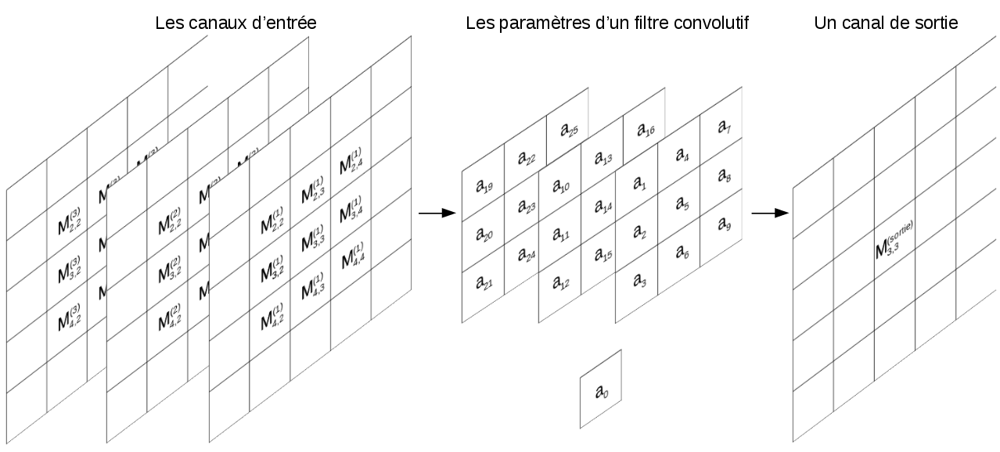Les variables entrant dans le calcul de la valeur \(M^{sortie}_{3,3}\) de la sortie d’un filtre convolutif
La couche de Max-Pooling génère des versions sous-échantillonnées des canaux en entrée. Chaque canal en entrée est découpé en rectangles de (généralement) \(2\times 2\) pixels, ensuite, la valeur maximale à l’intérieure de chaque rectangle est préservée dans le canal de sortie (ce qui revient à une compression d’un facteur de 4). Ceci est illustré dans la figure [max-pooling]. Le pooling réduit la taille des canaux, réduisant ainsi la quantité des paramètres et de calcul dans le réseau. .
La couche de fonctions d’activation applique une fonction non linéaire (par exemple RELU) à ses entrées. Généralement, une telle couche est insérée après chaque couche convolutive pour permettre au réseaux d’apprendre des filtres autres que les fonctions linéaires.
Les couches entièrement connectées sont des couche usuelles des réseaux de neurones, comme présenté dans la figure [reseau-de-neurones]. Ces couches constitue généralement les dernière couches des réseaux de neurones de classification.
Pour un traitement plus général des couches présentées ci-dessus, nous vous référons à (Fei-Fei, Karpathy, and Johnson 2016).
Classification avec les réseaux de neurones convolutifs
Krizhevsky, Sutskever, and Hinton (2012) sont arrivés les premiers dans la compétition de classification ImageNet 2012. Leur approche est simple conceptuellement. Il s’agit d’un réseau de neurones convolutif appris de bout à bout par l’algorithme du rétro-propagation. Une approche très similaire à celle de LeCun, Bottou, and Bengio (1998). L’entrainement de leur modèle était possible grâce à la disponibilité d’un volume énorme de données labellisées (la base de donnée ImageNet) et leur utilisation d’un processeur graphique (GPU) pour accélérer l’apprentissage. Dès lors, les réseaux de neurones convolutifs représentent l’état de l’art en classification.
Les architectures des réseaux de classifications suivent le même patron illustré dans la figure [cnn-classification]: La première couche du réseau contient les 3 canaux RGB de l’image. La 2ème couche est convolutive et génère un nombre de canaux en sortie. Après, il y a une couche de Max-Pooling qui préserve le nombre de canaux mais les réduit en taille poursuivie par une couche calculant la fonction RELU. Cette combinaison Convolution-Pooling-RELU est répétée un certain nombre de fois. La sortie de tout ça est un certain nombre de canaux (qu’on appelle en anglais convolutional feature map) représentant les caractéristiques extraites de l’image. La Convolutional feature map est traitée comme un vecteur et est connectée à l’entrée d’un réseau de neurones usuel (couches entièrement connectées) qui génère \(K\) sorties chacune représentant la probabilité de l’appartenance de l’image à la \(k^{ème}\) classe. Multiples améliorations de cette architecture ont été proposées. Citons par exemple GoogLeNet (Szegedy et al. 2014) et ResNet (He et al. 2015).
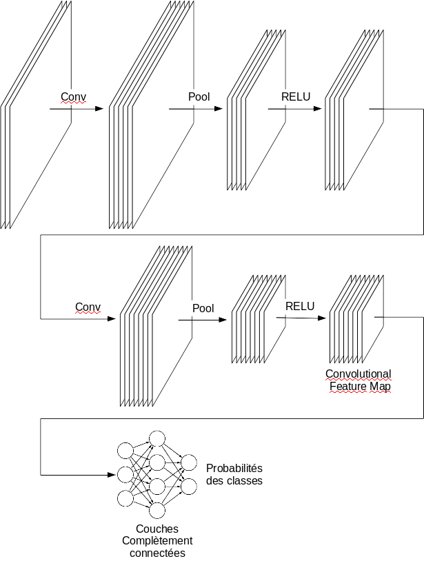Le parton des réseaux de neurones de classification. Conv: couche convolutive, Pool: Couche de Max-Pooling, RELU: Couche calculant la fonction RELU.
Comptage des foules avec les réseaux de neurones convolutifs
Lempitsky and Zisserman (2010) ont proposé un cadre d’apprentissage supervisé pour les tâches de comptage d’objets visuels tel que les images d’entraînement sont annotées avec des points (un point par objet). On appelle ces annotations la carte de densité (density maps). Ils ont évité la tâche difficile d’apprendre à détecter et à localiser les instances d’objets individuels. Au lieu de cela, ils ont reformulé le problème comme estimation d’une densité d’image dont l’intégrale sur toute région d’image donne le nombre d’objets dans cette région.
Zhang et al. (2015) ont traité le problème de comptage des foules de manière similaire. Ils ont employé un réseau de neurones pour estimer les cartes de densité des images de foules. Zhang et al. (2016; Marsden et al. 2017) ont apporté des améliorations à leur méthode. Nous présentons dans les figures [cnn-foules] et [density-maps] le réseau de Marsden et al. (2017) et un exemple des cartes de densités.
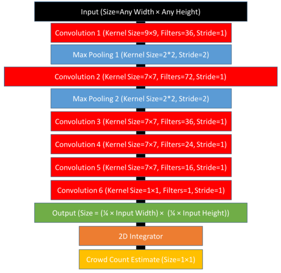Le réseau de neurone convolutif de détection des foules de Marsden et al. (2017) (figure copiée sans autorisation)Figure copiée sans autorisation de (Marsden et al. 2017). À gauche: les images des foules, au milieu: les cartes de densité (ground truth) et à droite les cartes de densité estimées par la méthode (Marsden et al. 2017)
Détection avec les réseaux de neurones convolutifs
La détection peut être implémentée en exécutant un classifieur sur plusieurs fenêtres extraites de l’image. La façon la plus simple pour extraire les fenêtres à classifier est appelée sliding window: Essayer toutes (ou presque toutes) les fenêtres possibles. Un exemple de cette approche est la méthode Overfeat par Sermanet et al. (2013): Un réseau de neurones convolutif de classification est entrainé (Une classe "arrière plan" est ajoutée en plus des classes des objets). Ce réseau de classification est un ensemble de couches convolutives qui génèrent la convolutional feature map, suivies par des couches entièrement liées générant dans leur sortie les probabilités des classes. Un autre réseau de neurones de couches entièrement liées est connecté à la convolutional feature map. Il est entrainé pour faire la localisation (prédire les coordonnées de la fenêtre de délimitation contenant l’objet classifié). Pour détecter les objets dans une image, les deux réseaux sont exécutés sur des fenêtres recouvrant l’image avec plusieurs échelles. Puis, les prédictions de toutes ses réseaux sont combinées pour donner le résultat final. L’approche de Sermanet et al. (2013) exploite le faite que les opérations de convolution peuvent être exécutés une seule fois pour toutes les fenêtres de la même échelle.
La détection peut être rendue plus rapide en choisissant intelligemment les fenêtres à classifier. Les méthodes d’object proposals génèrent un nombre de fenêtres réduit par rapport à sliding window en ne considérant que les régions susceptible à contenir un objet. Parmi ces méthodes, nous citons:
L’algorithme selective search(Uijlings et al. 2012) segmente l’image hiérarchiquement en commençant des petits groupes de pixels et en combinant récursivement les groupes qui partagent la même propriété comme la couleur ou la texture. Les groupes de pixels générés par cet algorithme sont ensuite passés à un classifieur pour déterminer s’il y a vraiment un objet.
La méthode Edge boxes(Zitnick and Dollár 2014) se base sur les contours extraits de l’image pour estimer la probabilité qu’il y a un objet. Les auteurs ont comparé leur méthode avec plusieurs méthodes antérieures pour démontrer son efficacités et précision.
Dans R-CNN (Regions with CNN features)(Girshick, Donahue, and Darrell 2014), l’algorithme selective search est employé pour choisir un nombre de fenêtres. Ces fenêtres sont ensuite passée, une à la fois, à un réseau de neurone convolutif. La convolutional feature map de ce réseau (la dernière couche) est connectée à 2 réseaux de neurones de couches entièrement connectées. Un réseau pour donner la classe est un autre pour estimer une fenêtre de délimitation plus étroite.
Girshick (2015) ont conçu une amélioration de l’approche précédente appelée Fast R-CNN. Au lieu d’exécuter le réseau convolutif répétitivement pour chaque fenêtre, toute l’image est passé au réseau convolutif générant une grande convolutional feature map. les régions correspondantes aux fenêtres proposées par selective search sont extraites de la convolutional feature map et leurs tailles sont normalisées avec un opérateur de Pooling appelé RoI-Pooling (Region of Interest Pooling) (visualisé dans la figure [roi-pooling]). Ces régions qui sont de même taille sont ensuite passées, une à la fois, aux deux réseaux de neurones (de classification et de contraction des fenêtres de délimitations).
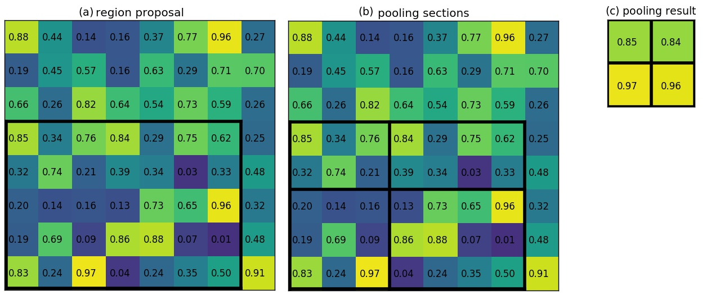 Region of Interest Pooling (prise sans autorisation de https://blog.deepsense.ai/region-of-interest-pooling-explained/): On veut normaliser la taille de la région de la convolutional feature map à \(2 \times 2\). (a) montre la fenêtre à considérer dans un canal (une des matrices) de la convolutional feature map. (b) montre comment cette fenêtre est découpée et (c) donne le résultat de pooling où la valeur maximale est prise dans chaque région.
Ren et al. (2015) ont réalisé une autre amélioration de R-CNN appelée Faster R-CNN. Leur idée principale est que les caractéristiques apprises par le réseau de neurone convolutifs peuvent être utilisée pour extraire les Object proposals. L’algorithme selective search est remplacé par des filtres convolutifs de tailles différentes opérant sur la convolutional feature map. Ces filtres sont entrainés pour prédire l’existence des objets. Les activations de ces filtres donnent les Object proposals. L’état de l’art actuel de la détection dans le benchmark Microsoft Coco a été réalisé par un ensemble de réseaux de variantes de Faster R-CNN(Huang et al. 2016).
Estimation de posture avec les réseaux de neurones convolutifs
Cao et al. (2016) ont produit un système qui fonctionne en temps réel et qui est capable d’estimer les postures de plusieurs personnes dans des images encombrées. Dans leur approche, un réseau convolutif est entrainé pour:
Détecter certaines parties des corps humains comme les visages, les mains, les pieds et les articulations principales (genoux, épaules et couds). Ceci est réalisé en générant \(N\) cartes de confiance (confidence maps), une par type de partie (une pour les visages, une autre pour les main, etc.). Ces cartes sont des matrices contenant des 1 la où l’objet concerné est détecté.
Estimer l’angle d’inclinaison des membres en générant \(K\) matrices donnant pour chaque pixel de l’image un angles entre \(0\) et \(180^{\circ}\), \(K\) étant le nombre de types de membres considérés (par exemple: la partie entre le genou et le pied).
Après la génération des cartes de confiance et d’inclinaisons des membres, un algorithme glouton est utilisé pour relier les parties appartenant à la même personne. La figure [cao-exemple] donne un exemple des cartes de confiances et d’inclinaison et le résultat de cet algorithme pour une image.
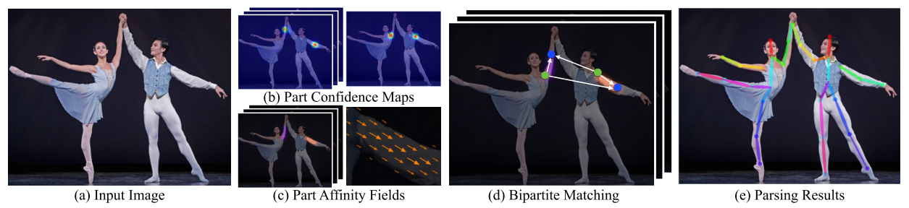Exemple d’estimation de postures avec (Cao et al. 2016) (Figure 2 de leur papier prise sans autorisation). (a) affiche l’image en entrée. (b) visualise 2 cartes de confiance: Une qui détecte les épaules et l’autre les couds. (c) visualise la matrice donnant les angles d’inclinaison des bras. Et (e) donne le résultat final après la liaison de toutes les parties
Apprentissage par transfert
L’apprentissage par transfert est la reconnaissance et l’application des connaissances apprises dans une tache sur de nouvelles taches similaires (Pan and Yang 2010).
D’après Fei-Fei, Karpathy, and Johnson (2016), très peu de chercheurs entrainent les réseaux convolutifs à partir de zéro (avec une initialisation aléatoire), car il est relativement rare d’avoir un ensemble de données de taille suffisante pour effectuer l’entrainement. Au lieu de cela, il est courant de pré-trainer un réseau convolutif sur un ensemble de données très important (par exemple, ImageNet, qui contient 1,2 million d’images avec 1000 catégories), puis utiliser les couches convolutives soit comme amorçage d’une initialisation, soit comme un extracteur de caractéristiques pour la tâche d’intérêt.
Challenges des réseaux de neurones convolutifs
Problèmes de sureté
Szegedy et al. (2013) ont constaté que des légères modifications (indiscernables par les humains) sur les images peuvent les rendre mal classifiées. On appelle la nouvelle image un exemple adversatif (adversarial example). La figure [adversarial] donne un tel exemple.
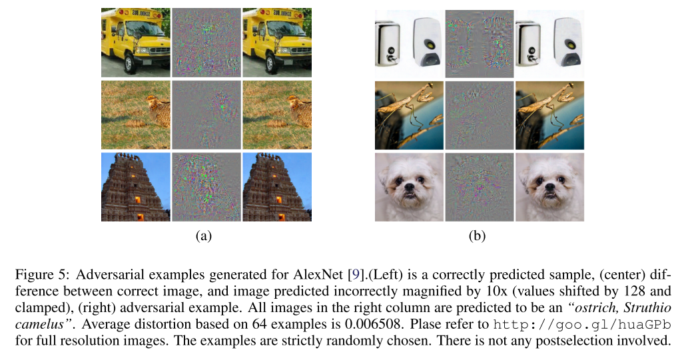Des exemples adversatifs (Figure 5 de (Szegedy et al. 2013) prise sans autorisation)
Une image classifiée correctement comme appartenant à la classe \(j\) peut être transformée légèrement pour quelle soit mal classifiée comme image de classe \(k\) par l’algorithme d’optimisation suivant: L’image est introduite à l’entrée du réseau de neurones artificiels qui génère dans sa sortie les probabilités de toutes les classes. L’objectif est d’augmenter la probabilité de la classe \(k\). On calcule alors la dérivé partielle de la probabilité de la classe \(k\) par rapport à la valeur de chaque pixel de l’image (ceci est possible comme le réseau de neurones représente une fonction dérivable). Ensuite, on mit à jour les valeurs des pixels dans la direction des dérivés partielles. Ces étapes peuvent être répétées jusqu’à générer une image classifiée comme appartenant à la classe \(k\)(Goodfellow, Shlens, and Szegedy 2014).
Szegedy et al. (2013) ont montré que les exemples adversatifs construits pour un réseau de neurones convolutif donné peuvent tromper d’autres réseaux d’architectures différentes et entrainés avec des bases de données différentes. De ce fait, ces exemples posent des problèmes de sécurité car ils pourraient être utilisés pour attaquer les systèmes d’apprentissage machine, même si l’adversaire n’a pas accès au modèle de détection utilisé.
Goodfellow, Shlens, and Szegedy (2014) ont conçu une famille de méthodes rapide pour générer les exemples adversatifs et Athalye and Sutskever (2017) ont montré que ces exemples peuvent être rendus robustes aux transformations (changement d’échelle, d’angle, de perspective et autres) et donc utilisables pour attaquer les systèmes de surveillance et des véhicules auto-pilotés.
Problèmes de compréhensibilité
Les réseaux de neurones convolutifs appartiennent aux approches dites boites noires c’est-à-dire qu’il est difficile de les comprendre. Plusieurs méthodes ont été conçues pour interpréter les filtres appris. Ces méthodes suppose généralement que:
Le réseau convolutif utilise la fonction d’activation RELU (définie par \(f(x) = max(0, x)\)). Donc, uniquement les valeurs positives sont propagées. On dit qu’un neurone est excité ou déclenché lorsqu’il génère une valeur positive.
Les couches convolutives sont vues comme des neurones qui partagent les mêmes poids mais qui consomme des entrées prises de fenêtres différentes.
Zeiler and Fergus (2014) ont conçu une méthode permettant de savoir quels genres de motifs déclenchent les neurones. Pour cela, une image est introduite à l’entrée du réseau de neurones et sa sortie est calculée. Ensuite et à partir du neurone à analyser, les opérations effectuées par le réseaux de neurones sont inversées (Opération de déconvolution) pour obtenir les pixels de l’image responsables de son déclenchement.
Yosinski et al. (2015) ont présenté une méthode de visualisation basée sur l’optimisation: L’image en entrée du réseau est modifiée de sorte à maximiser le déclenchement d’un neurone donné. L’image résultante donne une idée sur les motifs détectés par ce neurone. L’optimisation est faite sous contraintes de régularisation pour s’assurer que l’image générée semble naturelle (contrairement aux exemples adversatifs vus dans la section précédente).
Problèmes de performance
Les meilleurs résultats récents ont été obtenus grâce à l’emploie des réseaux de neurones convolutifs profonds. Cette profondeur implique un cout en terme de mémoire pour le stockage des paramètres du réseau et des résultats intermédiaires de calcul, et en terme de temps de calcul pendant l’entrainement et l’exécution du modèle déployé. Par exemple, les réseaux convolutifs de classification modernes prennent 2 à 3 semaines pour s’entraîner sur plusieurs GPU sur la base de données ImageNet (Fei-Fei, Karpathy, and Johnson 2016). Après entrainement couteux, les réseaux de neurones peuvent être exécutées en temps réel, mais ils nécessitent l’emploie des processeurs graphiques puissants ce qui limite leurs utilisabilité dans les systèmes embarqués.
Pour réduire la taille et le temps d’exécution des réseaux de neurones entrainés, Han, Mao, and Dally (2015) ont proposé une pipeline de compression en trois étapes (appelé deep compression): l’élagage, la quantification formée et le codage Huffman, qui réduisent les besoins de stockage des paramètres des réseaux de neurones de 35 fois à 49 fois sans affecter leur précision. L’élagage est fait en préservant uniquement les connexions importantes. Ensuite, les poids sont quantifiés ce qui réduit le nombre de bits qui représentent chaque connexion de 32 à 5. Enfin, le codage Huffman est appliqué. Cette méthode a réduit le stockage requis par AlexNet (le réseau de Krizhevsky, Sutskever, and Hinton (2012)) de 240 Mo à 6,9 Mo, et la taille de VGG-16 (Simonyan and Zisserman 2014) de 552 Mo à 11,3 Mo, toujours sans perte de précision. Cela permet de charger le modèle dans le cache SRAM du processeur plutôt que dans la mémoire DRAM gagnant ainsi en terme de vitesse et d’efficacité énergétique. Dans un travail ultérieur, Han et al. (2016) ont conçu un matériel spécialisé pour exécuter les modèles compressés qui est plus rapide et plus énergétiquement efficace que les CPUs et les GPUs.
Iandola et al. (2016) ont créé le réseau de neurone convolutif SqueezeNet. Leur modèle a surpassé la précision d’AlexNet dans le benchmark de classification d’ImageNet tout en ayant 50 fois moins de paramètres (4.8 Mo versus 240 Mo). Après l’application de la deep compression(Han, Mao, and Dally 2015), leur réseau devient de 0.5 Mo (soit 510 fois plus petit qu’AlexNet) tout en gardant la même précision. Le réseau SqueezeNet peut être entrainé dans un temps réduit et il est plus rapide au moment d’exécution. La réduction du nombre de paramètres a été réalisée avec une stratégie étonnamment simple: En (1) remplaçant une partie des filtres convolutifs de taille \(3 \times 3\) par des filtres de \(1 \times 1\) et en (2) réduisant le nombre de canaux d’entrée des filtres \(3 \times 3\). Il est à noter que la performance de SqueezeNet est dépassée par plusieurs modèles plus lourds comme ResNet(He et al. 2015).
Conclusion
L’apprentissage automatique des caractéristiques avec les réseaux de neurones convolutifs est l’élément commun trouvé dans les approches représentant l’état de l’art en vision par ordinateur. Ces réseaux ont leurs propres désavantages comme leur vulnérabilité aux exemples adversatifs, leur nature peu interprétable et leur exigence en terme de ressources.
Coté applicatif
Installation des frameworks de vision par ordinateur
Introduction
L’objet de ce chapitre est la présentation des bibliothèques et programmes open sources implémentant les algorithmes de traitement d’images et de vidéos et les algorithme d’apprentissage automatique.
Dans la section 1.1, nous expliquons notre choix de système d’exploitation de développement. Ensuite, nous définissons brièvement et donnons les instructions d’installation de la bibliothèque OpenCV (section 1.2), la plateforme SciPy (section 1.3) et enfin la framework Caffe (section 1.4).
Système d’exploitation utilisé
Nous avons choisi comme système d’exploitation de développement la distribution Linux Fedora Workstation, développée et sponsorisée par l’entreprise Red Hat, avec l’interface graphique LXDE.
En fait, le cluster IBNBADIS5 du CERIST6 utilise la distribution commerciale Red Hat Linux qui est basée sur Fedora. L’utilisation de cette dernière nous facilitera le passage au cluster IBNBADIS en cas de besoin.
Quant à l’interface graphique LXDE (Lightweight X11 Desktop Environment), nous l’avons choisie car elle utilise peux de ressources processeur et mémoire (Moins de 200 Mo au démarrage). Cette économie d’espace mémoire est très importante vu que les réseaux de neurones profonds en sont très gourmands.
Problème du Swapping
Le système Linux supporte la fonctionnalité de Swapping qui permet d’utiliser une partie de la mémoire secondaire appelée Swap comme extension de la RAM. Le Swapping est utile lorsqu’on a besoin de plusieurs programmes qui utilisent ensemble plus de mémoire que disponible et lorsqu’on ne bascule pas souvent entre eux.
Nous avons désactivé le Swapping dans notre système car il n’est pas compatible avec notre cas d’utilisation: Nous utilisons plusieurs programmes interactifs (la console interactive (REPL: Read–eval–print loop) du langage python, l’éditeur de texte et le navigateur internet) et le programme Caffe qui devient gourmand en terme de ressources si on charge un réseau de neurones de grande taille. Lorsque Caffe utilise plus de mémoire que disponible dans le système, et comme il est le programme utilisant le plus le processeur, il force tous les programmes interactif à être déchargés hors de la RAM rendant le système inutilisable. Et si le modèle chargé dans Caffe est suffisamment grand que les résultats de calcul intermédiaires ne peuvent pas être tenus dans la RAM, en plus du système inutilisable, le calcul lui même devient lent. À cause de tout cela, nous avons décidé de désactiver le Swapping ce qui cause les modèles géants à se planter sans bloquer le système. Le swapping peut être désactivé en utilisant la commande linux: sudo swapoff -a
La bibliothèque OpenCV
OpenCV (pour Open Computer Vision)7 est une bibliothèque graphique libre supportée par Intel et distribuée sous licence BSD. Elle permet la lecture, l’écriture et l’affichage des images et des vidéos sous plusieurs formats. Elle implémente des algorithmes de traitement d’images comme le filtrage, le seuillage, la segmentation et la détection de visages, et des algorithmes de traitement de vidéos comme la soustraction de l’arrière plan et la poursuite d’objets. OpenCV implémente aussi des algorithmes d’apprentissages supervisés et non supervisés et plusieurs opérations algébriques portant sur les matrices. Elle peut exploiter la puissance calculatoire des GPU Nvidia. Elle est aussi optimisée pour les appareils mobiles (Pulli, Baksheev, and Kornyakov 2012)
La bibliothèque OpenCV est écrite en C++ et utilisable avec les langages de programmations C++, C, Python et Java. Nous l’avons installée avec la commande:
sudo yum install opencv
Et nous avons installé son interface de programmation sous langage Python avec:
sudo yum install opencv-python
La distribution SciPy
SciPy8 est une distribution de bibliothèques Python et un environnement de travail scientifique open sources sous licence BSD. Elle offre une console interactive du langage python, une bibliothèque de calcul matriciel (Numpy) optimisée et écrite en langage C, des modules pour la création des graphes et des tableaux et des fonctionnalités similaires à MATLAB, GNU Octave et R.
Il y a deux versions de la distribution SciPy: Une basée sur la version 2 du langage de programmation Python et une autre basée sur la version 3. Nous avons installé la version Python2 car elle est la seule supportée par Caffe (l’objet de la section suivante). SciPy peut être installée avec les commandes: sudo pip install numpy sudo pip install scipy sudo pip install pandas sudo pip install sympy sudo pip install nose sudo pip install jupyter sudo yum install redhat-rpm-config sudo pip install scikit-image sudo pip install ’ipython<6.0’ sudo pip install jupyter
SciPy inclue Jupyter Notebook:9 Une application web offrant une console interactive Python et permettant de créer et partager des documents contenant du code, équations, visualisations et textes explicatifs. La figure [jupyter] montre l’interface Jupyter notebook qui est ouvrable avec la commande: jupyter notebook
Jupyter Notebook ouvert dans le navigateur Firefox dans Fedora Workstation LXDE
. [jupyter]
L’exécution de Jupyter Notebook dans le cluster
Comme Jupyter Notebook est un serveur web, il peut (en principe) être installé et lancé dans un nœud de calcul puissant d’un cluster et utilisé depuis une machine de ressources limitées en se connectant à l’adresse IP du nœud de calcul. Cette méthode nécessite soit que ce nœud possède une adresse IP publique ou bien qu’il se trouve dans le même réseau privé que la machine client. IPython est un alternatif de Jupyter Notebook qui fait partie de SciPy et qui fonctionne sous mode texte. Il est donc utilisable à distance via SSH10 contournant ainsi le problème de connaissance de l’adresse IP du nœud de calcul. Ipython peut être lancé avec la commande: ipython
Un autre problème avec l’exécution du Jupyter Notebook dans un nœud de cluster est que les fonctions d’ouverture de fenêtres (que nous avons utilisé pour la visualisation des objets détectés dans les vidéos) ne marcheront plus car (1) elles nécessitent que le nœud du cluster puisse afficher une interface graphique et (2) même si c’est le cas, la fenêtre s’ouvrira dans la machine du cluster au lieu de la machine client. Il faudra donc trouver d’autres façons pour visualiser en temps réel les algorithmes. Une possibilité est d’enregistrer les images dans des fichiers et de synchroniser le dossier les contenant avec SSH.
La framework Caffe
Caffe11 est une framework d’apprentissage profond. Elle est développée par Berkeley AI Research (BAIR) et la communauté open source sous licence BSD. Elle permet de définir sous format texte l’architecture du réseau de neurones artificiels en combinant des bloques de base pré-définis comme les couches convolutives, complètement connectées et les neurones calculant la fonction objectif. Elle permet aussi l’entrainement des réseaux de neurones sur des bases de données d’apprentissage créées par l’utilisateur et la manipulation pragmatique des architectures grâce à un API12 C++ et Python 2.
Caffe peut exploiter les GPUs NVidia pour accélérer le calcul. Comme nous n’avons pas de tel matériel, nous avons compilé Caffe en mode CPU. Voici ci-dessous les instructions d’installation de Caffe (Cette liste est un peu différente de celle donnée dans le site officiel13 qui est écrite pour les systèmes Debian): sudo yum install protobuf-devel leveldb-devel snappy-devel sudo yum install opencv-devel boost-devel hdf5-devel gflags-devel sudo yum install glog-devel lmdb-devel atlas-devel sudo yum install python-devel python-numpy protobuf-python sudo yum install gcc-c++ # Télécharger et extraire https://github.com/BVLC/caffe dans le dossier "caffe" # TODO: rewrite it in code cd caffe # Modifier les fichiers de configuration pour que Caffe soit en mode CPU # et compatible avec Fedora (Consulter Mlle Setitra Insaf) # TODO: rewrite it in code make all make test make runtest make pycaffe echo ’export PYTHONPATH=/path-to-caffe-directory/python:$PYTHONPATH’ >> \sim/.bashrc
Caffe Model Zoo
La framework Caffe offre le Model Zoo14, une collection de réseaux de neurones pré-entrainés pour différents benchmarks. Ces modèles peuvent être utilisés directement ou bien pour initialiser un réseau de neurone traitant un nouveau problème comme expliqué dans la section 3.2.6.
Installation des logiciels dans le cluster
Le cluster IBNBADIS est composé d’un nœud d’administration, un nœud de visualisation équipé d’un GPU Nvidia Quadro 4000 (6GB, 448 coeurs), et 32 nœuds bi-processeurs Intel(R) Xeon(R) CPU E5-2650 2.00GHz de 8 cœurs chacun. Le système d’exploitation installé est Red Hat (version ?), et les logiciels installés sont: SLURM (pour la gestion des jobs), les compilateurs de C,C++ (version ?) et Fortran et la bibliothèque MPI.
Comme les utilisateurs simples du cluster n’ont pas droit d’installer les logiciels et les bibliothèques dans les nœuds du cluster, nous avons créé un manuel d’installation pour le passer aux administrateurs du cluster (toutes les commandes commençant par sudo dans ce rapport): sudo yum install opencv sudo yum install opencv-python sudo pip install numpy sudo pip install scipy sudo pip install pandas sudo pip install sympy sudo pip install nose sudo pip install jupyter sudo yum install redhat-rpm-config sudo pip install scikit-image sudo pip install ’ipython<6.0’ sudo pip install jupyter sudo yum install protobuf-devel leveldb-devel snappy-devel sudo yum install opencv-devel boost-devel hdf5-devel gflags-devel sudo yum install glog-devel lmdb-devel atlas-devel sudo yum install python-devel python-numpy protobuf-python sudo yum install gcc-c++
Ce manuel contient les instructions de l’installation de seulement la version CPU de la framework Caffe car nous n’avons pas des machines contenant des GPU Nvidia pour essayer d’installer la version GPU.
Le système du cluster peut ne pas être suffisamment récent pour pouvoir compiler Caffe. Dans (Bengherbia and Khelil 2016), le projet C++ développé utilisait des fonctionnalités de la version 2011 du langage C++, il n’était donc pas compilable avec la version du compilateur GCC installée dans le cluster IBNBADIS. Ce problème a été contourné en compilant le projet dans une machine de développement contenant le système Fedora 23, mais le programme généré n’était pas exécutable sur les machine du cluster car la version de la bibliothèque libc installée dans le cluster était ancienne et incompatible avec la version de la machine de développement. Ce deuxième problème a été résolut en reliant la bibliothèque libc statiquement (static linking).
S’il s’avère que la version de GCC du cluster est très ancienne pour compiler la framework Caffe, il faudra demander aux administrateurs du cluster de mettre à jour le compilateur GCC. Si ce n’est pas possible, on peut la compiler sur une machine externe avec liaison statique de ses bibliothèques (protobuf, leveldb, snappy, opencv, boost (possède une version statique), hdf5, gflags, glog, lmdb, atlas) à condition que les versions statiques de ces bibliothèques existent.
Conclusion
Dans ce chapitre, nous avons présenté le système de travail que nous avons configuré et qui contient des bibliothèques et logiciels open source sous la licence permissive BSD. Ces logiciels facilitent l’exploration des approche existantes avec un minimum de reprogrammation. Nous avons vu la bibliothèque OpenCV qui permet de décoder les images et les vidéos, la plateforme SciPy qui facilite la création et le partage du code expliqué et bien structuré et la framework Caffe qui permet d’entrainer et d’utiliser les réseaux de neurones artificiels avec son Model Zoo contenant plusieurs réseaux pré-entrainés. Nous avons préciser quels logiciels à installer sur le cluster IBNBADIS et discuté des problèmes potentiels qui peuvent arriver durant la compilation de Caffe dans le cluster.
Expériences faites
Introduction
Dans ce chapitre, nous présentons les expériences que nous avons fait (Setitra Insaf et moi) en utilisant les logiciels présentés dans le chapitre précédent. La section 2.1 entame les réseaux de classification que nous avons essayé et entrainé et la section 2.2 explique les approches de détection.
Classification avec les réseaux de neurones convolutif
Nous avons suivi plusieurs exemples qui viennent avec la framework Caffe et qui montrent comment faire la classification, la détection et l’entrainement des réseaux de neurones convolutifs.
caffe/examples/00-classification.ipynb présente l’API Python 2 qui permet de faire la classification des images en 1000 classes (du benchmark ImageNet) en utilisant le réseau de neurones pré-entrainé: bvlc_reference_caffenet.
Nous avons modifié cet exemple pour qu’il classifie une seule image à la fois (batch size = 1) car par défaut il classifie 50 images à la fois nécessitant plus de 4 Go de RAM pour les réseaux profonds. Nous avons essayé les réseaux téléchargés du Model Zoo: bvlc_alexnet (370 ms / image), SqueezeNet (292 ms / image), ResNet-50 (1.3 secondes / image) et ResNet-152 (2.94 secondes / image).
caffe/examples/01-learning-lenet.ipynb montre comment entrainé un réseau de neurones convolutif pour résoudre le benchmark MNIST: classification des caractères ([MNIST]). Ce benchmark est relativement facile à résoudre: Le réseau utilisé est de petite taille et il arrive à 90% de précision après quelques minutes d’entrainement sur un CPU Intel I3.
Nous avons entrainé un réseau de la même architecture sur le benchmark de classification des formes Mpeg7 en utilisant trois quarts des images pour l’entrainement et un quart pour le test. Nous avons obtenu un taux de précision parfait (100%) après quelques minutes d’entrainement seulement.
Dans caffe/examples/net_surgery.ipynb, l’architecture d’un réseau de neurones convolutif de classification déjà entrainé est manipulée en remplaçant les couches complètement connectées par des couches convolutives pour rendre le réseau capable d’accepter les images en entrée avec des tailles variables. La sortie de l’ancien réseau et un vecteur des probabilités d’appartenance de l’image d’entrée à chaque classe. Quant au nouveau réseau, sa sortie est une matrice par classe où les éléments de chaque matrice donnent la probabilité d’appartenance des régions de l’image d’entrée à la classe en question.
Cet possibilité de manipulation des réseaux entrainés est très intéressante. Par exemple, on peut alléger un réseau pré-entrainé en supprimant les nœuds correspondant aux classes impertinentes à notre problème. Par exemple, en supprimant les centaines de classes des réseaux entrainés sur la base de donnée ImageNet en ne laissant que celles en relation avec les scènes routières.
Nous avons remarqué que la vitesse d’exécution du réseau de neurones dépend de sa profondeur, son architecture et de la taille de l’image en entrée. Que les images d’entrée soient en couleurs ou en niveau de gris ne change que la taille des filtres de la première couche convolutive et a une influence minimale sur la performance du réseau.
Détection avec les réseaux de neurones convolutif
caffe/examples/detection.ipynb implémente la méthode R-CNN (Girshick, Donahue, and Darrell 2014). L’algorithme Selective Search (Uijlings et al. 2012) est implémenté en Matlab et les régions proposées par cet algorithme sont passées à Caffe pour les classifier.
Nous avons modifié cet exemple pour faire la détection des personnes dans les Vidéos de surveillance de la base de données Virat. Nous avons commencé notre travail en évaluant les classifieur du Model Zoo de Caffe sur ces vidéo. Pour cela, nous avons écrit un programme qui utilise les annotations de Virat pour extraire les régions des vidéos contenant des objets d’intérêt (personnes, voitures, bicyclettes, etc.). Ensuite, nous avons classifié les images extraites avec des réseaux entrainés sur ImageNet. Les résultats de classification était catastrophiques du fait que le problème de classification de ImageNet ne contient pas les classes qui nous intéressent. Il faut donc soit chercher des réseaux entrainés sur des benchmarks plus appropriés comme Pascal VOC ou CIFAR100, ou bien entrainer notre propre réseau de classification.
En parallèle avec la recherche/création d’un bon classifieur, nous avons attaqué le problème d’extraction des objets en mouvement. Nous avons utilisé l’algorithme Background Subtractor MOG2 implémenté dans OpenCV pour extraire les objets mouvant. Nous avons remarqué qu’il y a souvent occlusion des objets qui bougent ensemble. Nous avant donc décidé de les séparer par un algorithme de Object Proposal comme Selective Search ou Edge Boxes (Zitnick and Dollár 2014).
Conclusion
Dans ce chapitre, nous avons décrit les expériences que nous avons réalisé ou que nous somme en cours de réalisé. Notre expérimentation nous a permit de mettre en pratique les notions présentées dans l’étude bibliographique. Elle nous a permis aussi d’avoir une bonne idée sur les ressources matérielles nécessaires pour l’utilisation des réseaux de neurones convolutifs.
Conclusion générale
Due à la complexité inhérente des problèmes de vision par ordinateur, les travaux de ce domaine utilisent des techniques d’apprentissage automatique basées sur les données au lieu de la programmation explicite. Les réseaux de neurones convolutifs sont la technique d’apprentissage utilisée dans les méthodes représentant l’état de l’art dans les problèmes de classification, de détection et de comptage des objets. Nous avons expliqué le principe de fonctionnement de ces réseaux et plusieurs approches les utilisant. Nous avons aussi discuté leurs besoins en terme de ressources et fait un plan pour pouvoir les utiliser dans le cluster IBNBADIS. Enfin, nous avons conduit des expériences de classification et de détection en utilisant les réseaux convolutifs.
Par rapport à l’échéance 2016, nous n’avons pas concentré sur les méthodes de segmentation d’images car elle représente un problème difficile et demandeur de ressources et qui n’est pas nécessaire pour réaliser notre objectif de détection, de comptage et de suivi. De plus, nous n’avons pas entamé, par manque de temps, le suivit ou la ré-identification des objets en mouvement.
Remerciements
Tous mes remerciements vont à mes parents envers lesquels je serai toujours redevable, à M. Meziane Abdelkrim pour m’avoir encadré avec une très grande disponibilité, et aux membres du laboratoire CERIST et notamment Mlle Setitra Insaf pour sa collaboration. Merci également à tous mes enseignants et à l’équipe pédagogique et administrative de l’ESI.
Bengherbia, Nawfel, and Massyl Yacine Khelil. 2016. “La théorie des jeux pour l’optimisation multiobjectif: Application au problème d’affectation de fréquences.” PhD thesis, ESI (L’école nationale supérieure d’informatique).
Goodfellow, IJ, J Shlens, and C Szegedy. 2014. “Explaining and harnessing adversarial examples.” arXiv Preprint arXiv:1412.6572. https://arxiv.org/abs/1412.6572.
Han, Song, Xingyu Liu, Huizi Mao, Jing Pu, Ardavan Pedram, Mark A Horowitz, and William J Dally. 2016. “EIE: Efficient Inference Engine on Compressed Deep Neural Network.” https://arxiv.org/pdf/1602.01528.pdf.
Han, Song, Huizi Mao, and William J. Dally. 2015. “Deep Compression: Compressing Deep Neural Networks with Pruning, Trained Quantization and Huffman Coding,” October. http://arxiv.org/abs/1510.00149.
He, Kaiming, Xiangyu Zhang, Shaoqing Ren, and Jian Sun. 2015. “Deep Residual Learning for Image Recognition,” December. http://arxiv.org/abs/1512.03385.
Heath, David, Simon Kasif, and Steven Salzberg. 1993. “Learning oblique decision trees.” In IJCAI-93, 160:1002.
Huang, Jonathan, Vivek Rathod, Chen Sun, Menglong Zhu, Anoop Korattikara, Alireza Fathi, Ian Fischer, et al. 2016. “Speed/accuracy trade-offs for modern convolutional object detectors,” November. http://arxiv.org/abs/1611.10012.
Iandola, Forrest N., Song Han, Matthew W. Moskewicz, Khalid Ashraf, William J. Dally, and Kurt Keutzer. 2016. “SqueezeNet: AlexNet-level accuracy with 50x fewer parameters and,” February. http://arxiv.org/abs/1602.07360.
Ioffe, Sergey, and Christian Szegedy. 2015. “Batch Normalization: Accelerating Deep Network Training by Reducing Internal Covariate Shift,” February. http://arxiv.org/abs/1502.03167.
Marsden, Mark, Kevin Mcguinness, Suzanne Little, and O ’connorNoel E. 2017. “Fully Convolutional Crowd Counting on Highly Congested Scenes.” https://arxiv.org/pdf/1612.00220.pdf.
Milan, Anton, Laura Leal-Tai, Ian Reid, Stefan Roth, and Konrad Schindler. 2016. “MOT16: A Benchmark for Multi-Object Tracking.” https://arxiv.org/pdf/1603.00831.pdf.
Rumelhart, David E., Geoffrey E. Hinton, and Ronald J. Williams. 1986. “Learning representations by back-propagating errors.” Nature 323 (6088): 533–36. https://doi.org/10.1038/323533a0.
Sermanet, P, D Eigen, X Zhang, and M Mathieu. 2013. “Overfeat: Integrated recognition, localization and detection using convolutional networks.” arXiv Preprint arXiv:https://arxiv.org/abs/1312.6229.
Sethi, Ishwar Krishnan. 1990. “Entropy nets: From decision trees to neural networks.” Proceedings of the IEEE 78 (10): 1605–13.
Simonyan, K, and A Zisserman. 2014. “Very deep convolutional networks for large-scale image recognition.” arXiv Preprint arXiv:1409.1556. https://arxiv.org/abs/1409.1556.
Szegedy, Christian, Wei Liu, Yangqing Jia, Pierre Sermanet, Scott Reed, Dragomir Anguelov, Dumitru Erhan, Vincent Vanhoucke, and Andrew Rabinovich. 2014. “Going Deeper with Convolutions,” September. http://arxiv.org/abs/1409.4842.
Szegedy, C, W Zaremba, I Sutskever, and J Bruna. 2013. “Intriguing properties of neural networks.” arXiv Preprint arXiv:https://arxiv.org/abs/1312.6199.
Yosinski, J, J Clune, A Nguyen, and T Fuchs. 2015. “Understanding neural networks through deep visualization.” arXiv Preprint arXiv:https://arxiv.org/abs/1506.06579.
Zeiler, Matthew D, and Rob Fergus. 2014. “Visualizing and Understanding Convolutional Networks.” European Conference on Computer Vision, November. http://arxiv.org/abs/1311.2901.


{kind=link}